Capítulo 2 Análisis Exploratorio de Datos (EDA)
Primeramente, haremos un análisis exploratorio de los datos
Librerias
if (.Platform$OS.type == "windows") {
invisible(Sys.setlocale("LC_CTYPE", "Spanish_Colombia.utf8"))
}
library(tidyverse)
library(Amelia)
library(moments)
library(ggplot2)
library(patchwork)
library(GGally)
library(readr)
library(dplyr)
library(car)
library(rstatix)
library(coin)
library(nortest)
library(knitr)
library(kableExtra)
options(knitr.table.format = "html")
library(broom)etiq_hist <- function(bins = NULL, binwidth = NULL, boundary = NULL, size = 2.6) {
list(
geom_text(stat = "bin", bins = bins, binwidth = binwidth, boundary = boundary,
aes(y = after_stat(count),
label = ifelse(after_stat(count) == 0, "",
scales::comma(after_stat(count)))),
angle = 90, hjust = -0.15, vjust = 0.5, size = size),
scale_y_continuous(labels = scales::comma, expand = expansion(mult = c(0, 0.16)))
)
}
etiq_barras <- function(size = 3.2) {
list(
geom_text(stat = "count",
aes(label = scales::comma(after_stat(count))),
vjust = -0.4, size = size),
scale_y_continuous(labels = scales::comma, expand = expansion(mult = c(0, 0.12)))
)
}
etiq_box <- function(size = 2.8) {
q <- function(p) function(y) unname(quantile(y, p))
etiqueta <- function(f) {
stat_summary(fun = f, geom = "text",
aes(label = format(round(after_stat(y), 1), big.mark = ",",
trim = TRUE, drop0trailing = TRUE)),
position = position_nudge(x = 0.4), hjust = 0, size = size)
}
list(etiqueta(q(0.25)), etiqueta(median), etiqueta(q(0.75)))
}Importemos el dataframe
Ver las primeras 5 filas
head(df, n = 5) %>%
kable(caption = "Primeras 5 filas del dataset", align = "c") %>%
kable_styling(bootstrap_options = c("striped", "hover", "condensed"),
full_width = FALSE, position = "center") %>%
row_spec(0, bold = TRUE) %>%
scroll_box(width = "100%")| id | Age | Gender | Annual Income | Marital Status | Number of Dependents | Education Level | Occupation | Health Score | Location | Policy Type | Previous Claims | Vehicle Age | Credit Score | Insurance Duration | Policy Start Date | Customer Feedback | Smoking Status | Exercise Frequency | Property Type | Premium Amount |
|---|---|---|---|---|---|---|---|---|---|---|---|---|---|---|---|---|---|---|---|---|
| 0 | 19 | Female | 10049 | Married | 1 | Bachelor’s | Self-Employed | 22.59876 | Urban | Premium | 2 | 17 | 372 | 5 | 2023-12-23 15:21:39 | Poor | No | Weekly | House | 2869 |
| 1 | 39 | Female | 31678 | Divorced | 3 | Master’s | NA | 15.56973 | Rural | Comprehensive | 1 | 12 | 694 | 2 | 2023-06-12 15:21:39 | Average | Yes | Monthly | House | 1483 |
| 2 | 23 | Male | 25602 | Divorced | 3 | High School | Self-Employed | 47.17755 | Suburban | Premium | 1 | 14 | NA | 3 | 2023-09-30 15:21:39 | Good | Yes | Weekly | House | 567 |
| 3 | 21 | Male | 141855 | Married | 2 | Bachelor’s | NA | 10.93814 | Rural | Basic | 1 | 0 | 367 | 1 | 2024-06-12 15:21:39 | Poor | Yes | Daily | Apartment | 765 |
| 4 | 21 | Male | 39651 | Single | 1 | Bachelor’s | Self-Employed | 20.37609 | Rural | Premium | 0 | 8 | 598 | 4 | 2021-12-01 15:21:39 | Poor | Yes | Weekly | House | 2022 |
Ver la estructura de los datos
tibble(
Variable = names(df),
Tipo = sapply(df, function(x) class(x)[1]),
`Primeros valores` = sapply(df, function(x) paste(head(as.character(x), 5), collapse = ", "))
) %>%
kable(caption = paste0("Estructura del dataset: ", format(nrow(df), big.mark = ","),
" observaciones y ", ncol(df), " variables"),
align = "lcl") %>%
kable_styling(bootstrap_options = c("striped", "hover", "condensed"),
full_width = FALSE, position = "center") %>%
row_spec(0, bold = TRUE)| Variable | Tipo | Primeros valores |
|---|---|---|
| id | numeric | 0, 1, 2, 3, 4 |
| Age | integer | 19, 39, 23, 21, 21 |
| Gender | character | Female, Female, Male, Male, Male |
| Annual Income | integer | 10049, 31678, 25602, 141855, 39651 |
| Marital Status | character | Married, Divorced, Divorced, Married, Single |
| Number of Dependents | integer | 1, 3, 3, 2, 1 |
| Education Level | character | Bachelor’s, Master’s, High School, Bachelor’s, Bachelor’s |
| Occupation | character | Self-Employed, NA, Self-Employed, NA, Self-Employed |
| Health Score | numeric | 22.5987606718139, 15.569730989408, 47.1775492878647, 10.9381441586646, 20.3760936277369 |
| Location | character | Urban, Rural, Suburban, Rural, Rural |
| Policy Type | character | Premium, Comprehensive, Premium, Basic, Premium |
| Previous Claims | integer | 2, 1, 1, 1, 0 |
| Vehicle Age | integer | 17, 12, 14, 0, 8 |
| Credit Score | integer | 372, 694, NA, 367, 598 |
| Insurance Duration | integer | 5, 2, 3, 1, 4 |
| Policy Start Date | POSIXct | 2023-12-23 15:21:39.13496, 2023-06-12 15:21:39.111551, 2023-09-30 15:21:39.221386, 2024-06-12 15:21:39.226954, 2021-12-01 15:21:39.252145 |
| Customer Feedback | character | Poor, Average, Good, Poor, Poor |
| Smoking Status | character | No, Yes, Yes, Yes, Yes |
| Exercise Frequency | character | Weekly, Monthly, Weekly, Daily, Weekly |
| Property Type | character | House, House, House, Apartment, House |
| Premium Amount | integer | 2869, 1483, 567, 765, 2022 |
2.1 Clasificación de las variables
Con base en la estructura anterior, las variables del dataset se clasifican según su naturaleza. Las variables id (identificador) y Policy Start Date (fecha/hora) no se incluyen en el análisis estadístico.
categoricas <- tibble(
Variable = c("Gender", "Marital Status", "Education Level", "Occupation",
"Location", "Policy Type", "Customer Feedback", "Smoking Status",
"Exercise Frequency", "Property Type"),
Subtipo = c("Nominal", "Nominal", "Ordinal", "Nominal", "Nominal", "Nominal",
"Ordinal", "Nominal", "Ordinal", "Nominal"),
Categorías = c("Female, Male",
"Divorced, Married, Single",
"High School, Bachelor's, Master's, PhD",
"Employed, Self-Employed, Unemployed",
"Rural, Suburban, Urban",
"Basic, Comprehensive, Premium",
"Poor, Average, Good",
"No, Yes",
"Rarely, Monthly, Weekly, Daily",
"Apartment, Condo, House")
)
categoricas %>%
kable(caption = "Variables categóricas (10)", align = "lcl") %>%
kable_styling(bootstrap_options = c("striped", "hover", "condensed"),
full_width = FALSE, position = "center") %>%
row_spec(0, bold = TRUE)| Variable | Subtipo | Categorías |
|---|---|---|
| Gender | Nominal | Female, Male |
| Marital Status | Nominal | Divorced, Married, Single |
| Education Level | Ordinal | High School, Bachelor’s, Master’s, PhD |
| Occupation | Nominal | Employed, Self-Employed, Unemployed |
| Location | Nominal | Rural, Suburban, Urban |
| Policy Type | Nominal | Basic, Comprehensive, Premium |
| Customer Feedback | Ordinal | Poor, Average, Good |
| Smoking Status | Nominal | No, Yes |
| Exercise Frequency | Ordinal | Rarely, Monthly, Weekly, Daily |
| Property Type | Nominal | Apartment, Condo, House |
numericas <- tibble(
Variable = c("Age", "Annual Income", "Health Score", "Credit Score",
"Premium Amount", "Number of Dependents", "Previous Claims",
"Vehicle Age", "Insurance Duration"),
Subtipo = c(rep("Continua", 5), rep("Discreta (conteo)", 4)),
Rol = c(rep("Predictora", 4), "Respuesta", rep("Predictora", 4))
)
numericas %>%
kable(caption = "Variables numéricas (9)", align = "lcc") %>%
kable_styling(bootstrap_options = c("striped", "hover", "condensed"),
full_width = FALSE, position = "center") %>%
row_spec(0, bold = TRUE)| Variable | Subtipo | Rol |
|---|---|---|
| Age | Continua | Predictora |
| Annual Income | Continua | Predictora |
| Health Score | Continua | Predictora |
| Credit Score | Continua | Predictora |
| Premium Amount | Continua | Respuesta |
| Number of Dependents | Discreta (conteo) | Predictora |
| Previous Claims | Discreta (conteo) | Predictora |
| Vehicle Age | Discreta (conteo) | Predictora |
| Insurance Duration | Discreta (conteo) | Predictora |
En total, el dataset contiene 1,200,000 observaciones y 21 variables: 10 categóricas, 9 numéricas (de las cuales Premium Amount es la variable respuesta), 1 identificador (id) y 1 variable de fecha/hora (Policy Start Date). Por lo tanto, se dispone de 18 variables predictoras: 10 categóricas y 8 numéricas.
2.2 Revisión de datos faltantes en las variables numéricas
Veamos si hay datos faltantes en estas variables.
df %>%
summarise(across(everything(), ~ sum(is.na(.)))) %>%
pivot_longer(everything(), names_to = "Variable", values_to = "Datos faltantes") %>%
mutate(`Porcentaje (%)` = round(`Datos faltantes` / nrow(df) * 100, 2)) %>%
kable(caption = "Datos faltantes por variable (antes de la imputación)",
format.args = list(big.mark = ","), align = "lcc") %>%
kable_styling(bootstrap_options = c("striped", "hover", "condensed"),
full_width = FALSE, position = "center") %>%
row_spec(0, bold = TRUE)| Variable | Datos faltantes | Porcentaje (%) |
|---|---|---|
| id | 0 | 0.00 |
| Age | 18,705 | 1.56 |
| Gender | 0 | 0.00 |
| Annual Income | 44,949 | 3.75 |
| Marital Status | 18,529 | 1.54 |
| Number of Dependents | 109,672 | 9.14 |
| Education Level | 0 | 0.00 |
| Occupation | 358,075 | 29.84 |
| Health Score | 74,076 | 6.17 |
| Location | 0 | 0.00 |
| Policy Type | 0 | 0.00 |
| Previous Claims | 364,029 | 30.34 |
| Vehicle Age | 6 | 0.00 |
| Credit Score | 137,882 | 11.49 |
| Insurance Duration | 1 | 0.00 |
| Policy Start Date | 0 | 0.00 |
| Customer Feedback | 77,824 | 6.49 |
| Smoking Status | 0 | 0.00 |
| Exercise Frequency | 0 | 0.00 |
| Property Type | 0 | 0.00 |
| Premium Amount | 0 | 0.00 |
El análisis de valores faltantes muestra que las variables id, Gender, Marital Status, Education Level y Occupation están completas (0 NA), mientras que las variables numéricas presentan cantidades considerables de datos faltantes: Age con 18,705, Annual Income con 44,949, Number of Dependents con 109,672 (la más afectada) y Health Score con 74,076, lo que indica que será necesario aplicar algún tratamiento de imputación antes de continuar con el análisis.
2.3 Imputación de datos faltantes
Ahora, imputemos los datos faltantes
vars_imp <- c("Age", "Annual Income", "Health Score", "Credit Score",
"Number of Dependents", "Previous Claims", "Vehicle Age",
"Insurance Duration")
# 1. Prueba de normalidad sobre los datos observados y elección del método
decision <- map_dfr(vars_imp, function(v) {
x_obs <- df[[v]][!is.na(df[[v]])]
lil <- nortest::lillie.test(x_obs)
normal <- lil$p.value >= 0.05
tibble(
Variable = v,
faltantes = sum(is.na(df[[v]])),
D = unname(lil$statistic),
p = lil$p.value,
Normalidad = ifelse(normal, "Sí", "No"),
Método = ifelse(normal, "Media", "Mediana"),
valor = ifelse(normal, mean(x_obs), median(x_obs))
)
})
# 2. Imputación con el método elegido
for (v in vars_imp) {
valor <- decision$valor[decision$Variable == v]
df[[v]][is.na(df[[v]])] <- valor
}
# 3. Tabla
decision %>%
mutate(p = ifelse(p < 0.001, "< 0.001", format(round(p, 4), nsmall = 4)),
D = round(D, 4),
valor = round(valor, 2)) %>%
select(Variable,
`Datos imputados` = faltantes,
`D (Lilliefors)` = D,
`p valor` = p,
`¿Distribución normal?` = Normalidad,
`Método de imputación` = Método,
`Valor imputado` = valor) %>%
kable(caption = "Criterio de imputación de las variables numéricas",
format.args = list(big.mark = ","), align = "lcccccc") %>%
kable_styling(bootstrap_options = c("striped", "hover", "condensed"),
full_width = FALSE, position = "center") %>%
row_spec(0, bold = TRUE)| Variable | Datos imputados | D (Lilliefors) | p valor | ¿Distribución normal? | Método de imputación | Valor imputado |
|---|---|---|---|---|---|---|
| Age | 18,705 | 0.0684 | < 0.001 | No | Mediana | 41.00 |
| Annual Income | 44,949 | 0.1545 | < 0.001 | No | Mediana | 23,911.00 |
| Health Score | 74,076 | 0.0474 | < 0.001 | No | Mediana | 24.58 |
| Credit Score | 137,882 | 0.0603 | < 0.001 | No | Mediana | 595.00 |
| Number of Dependents | 109,672 | 0.1628 | < 0.001 | No | Mediana | 2.00 |
| Previous Claims | 364,029 | 0.2263 | < 0.001 | No | Mediana | 1.00 |
| Vehicle Age | 6 | 0.0838 | < 0.001 | No | Mediana | 10.00 |
| Insurance Duration | 1 | 0.1152 | < 0.001 | No | Mediana | 5.00 |
Para decidir el método de imputación de cada variable numérica se evaluó el supuesto de normalidad mediante la prueba de Lilliefors, aplicada a los valores observados (sin considerar los datos faltantes). Las variables con distribución normal se imputaron con la media, y las que no cumplen la normalidad, con la mediana, por ser más robusta ante sesgos y valores atípicos. Con una confianza del 95%, ninguna de las variables evaluadas presentó distribución normal (p valor \(< 0.001\) en todos los casos), por lo que todas se imputaron con la mediana.
Verificamos otra vez si hay faltantes
## NA_id NA_Age NA_Gender NA_Annual Income NA_Marital Status
## 1 0 0 0 0 18529
## NA_Number of Dependents NA_Education Level NA_Occupation NA_Health Score
## 1 0 0 358075 0
## NA_Location NA_Policy Type NA_Previous Claims NA_Vehicle Age NA_Credit Score
## 1 0 0 0 0 0
## NA_Insurance Duration NA_Policy Start Date NA_Customer Feedback
## 1 0 0 77824
## NA_Smoking Status NA_Exercise Frequency NA_Property Type NA_Premium Amount
## 1 0 0 0 0En efecto, la imputación resultó exitosa y no tenemos ningún NA en las variables numéricas.
2.4 Revisión de datos faltantes en variables categóricas
Ahora, verifiquemos los NA en estas variables.
df %>%
select(where(is.character)) %>%
summarise(across(everything(), ~ sum(is.na(.)), .names = "NA_{.col}"))## NA_Gender NA_Marital Status NA_Education Level NA_Occupation NA_Location
## 1 0 18529 0 358075 0
## NA_Policy Type NA_Customer Feedback NA_Smoking Status NA_Exercise Frequency
## 1 0 77824 0 0
## NA_Property Type
## 1 0Al verificar los valores faltantes en las variables categóricas, se identificó que Marital Status (18,529), Occupation (358,075) y Customer Feedback (77,824) presentan datos faltantes, mientras que el resto de las variables categóricas (Gender, Education Level, Location, Policy Type, Smoking Status, Exercise Frequency y Property Type) están completas. Destaca el caso de Occupation, cuyo porcentaje de faltantes es considerablemente alto (cerca del 30% del total de registros), por lo que su tratamiento requerirá un enfoque distinto al resto, como la creación de una categoría independiente en lugar de una imputación por moda.
2.5 Imputación de datos faltantes en variables categóricas
moda_cat <- function(x) {
ux <- unique(na.omit(x))
ux[which.max(tabulate(match(x, ux)))]
}
df <- df %>%
mutate(
`Marital Status` = ifelse(is.na(`Marital Status`), moda_cat(`Marital Status`), `Marital Status`),
`Customer Feedback` = ifelse(is.na(`Customer Feedback`), moda_cat(`Customer Feedback`), `Customer Feedback`),
Occupation = ifelse(is.na(Occupation), "No especificado", Occupation)
)Para las variables categóricas con datos faltantes se manejó cada caso según su porcentaje de NA. En Marital Status y Customer Feedback, como los faltantes eran relativamente pocos, se optó por imputar con la moda, es decir, reemplazar los NA por la categoría que más se repite. En cambio, Occupation tenía casi un 30% de datos faltantes, por lo que imputar con la moda no era buena idea (se estaría inventando la ocupación de un tercio de los clientes), así que se decidió crear una categoría nueva llamada “No especificado” para dejar claro que esa información simplemente no se tenía.
df %>%
select(where(is.character)) %>%
summarise(across(everything(), ~ sum(is.na(.)), .names = "NA_{.col}"))## NA_Gender NA_Marital Status NA_Education Level NA_Occupation NA_Location
## 1 0 0 0 0 0
## NA_Policy Type NA_Customer Feedback NA_Smoking Status NA_Exercise Frequency
## 1 0 0 0 0
## NA_Property Type
## 1 0Verificamos la cantidad de NA en las variables categóricas después de la imputación y efectivamente es 0 en todas, es decir, la imputación fue exitosa.
2.6 Conversión de variables de tipo carácter a factor
El paso siguiente es convertir las variables de tipo carácter (character) a factor (factor), que es el tipo de dato que R utiliza para representar variables categóricas. Este formato permite definir de forma explícita los niveles de cada variable y, cuando corresponde, su orden, lo que facilita las tablas de frecuencia, los gráficos y las pruebas estadísticas.
df <- df %>%
mutate(
Gender = as.factor(Gender),
`Marital Status` = as.factor(`Marital Status`),
Occupation = as.factor(Occupation),
Location = as.factor(Location),
`Policy Type` = as.factor(`Policy Type`),
`Smoking Status` = as.factor(`Smoking Status`),
`Property Type` = as.factor(`Property Type`),
`Education Level` = factor(`Education Level`,
levels = c("High School", "Bachelor's", "Master's", "PhD"),
ordered = TRUE),
`Customer Feedback` = factor(`Customer Feedback`,
levels = c("Poor", "Average", "Good"),
ordered = TRUE),
`Exercise Frequency` = factor(`Exercise Frequency`,
levels = c("Rarely", "Monthly", "Weekly", "Daily"),
ordered = TRUE)
)Se convirtieron a factor todas las variables de tipo carácter: Gender, Marital Status, Occupation, Location, Policy Type, Smoking Status, Property Type, Education Level, Customer Feedback y Exercise Frequency. En el caso de Education Level, Customer Feedback y Exercise Frequency, se declararon además como factores ordenados, respetando una jerarquía lógica en sus categorías, lo que permite que tanto los análisis como las visualizaciones reflejen ese orden natural en lugar de mostrarlas en orden alfabético.
Todos los gráficos, tablas, estimaciones y pruebas de hipótesis se calculan con los 1,200,000 registros del conjunto de datos, sin submuestreo.
2.8 Resumen de las demás variables numéricas
Ahora se resumen las variables numéricas restantes, que serán las predictoras numéricas del estudio.
df %>%
select(where(is.numeric), -id, -`Premium Amount`) %>%
pivot_longer(cols = everything(), names_to = "variable", values_to = "valor") %>%
group_by(variable) %>%
summarise(
n = length(valor),
media = mean(valor),
sd = sd(valor),
mediana = median(valor),
RIC = IQR(valor),
Q1 = quantile(valor, 0.25),
Q3 = quantile(valor, 0.75),
mínimo = min(valor),
máximo = max(valor),
asimetría = skewness(valor),
curtosis = kurtosis(valor)
) %>%
kable(caption = "Resumen estadístico de las variables numéricas predictoras",
digits = 2, format.args = list(big.mark = ",")) %>%
kable_styling(bootstrap_options = c("striped", "hover", "condensed"),
full_width = FALSE, position = "center", font_size = 12) %>%
row_spec(0, bold = TRUE)| variable | n | media | sd | mediana | RIC | Q1 | Q3 | mínimo | máximo | asimetría | curtosis |
|---|---|---|---|---|---|---|---|---|---|---|---|
| Age | 1,200,000 | 41.14 | 13.43 | 41.00 | 23.00 | 30.00 | 53.00 | 18.00 | 64.00 | -0.01 | 1.83 |
| Annual Income | 1,200,000 | 32,414.31 | 31,615.60 | 23,911.00 | 35,290.00 | 8,646.00 | 43,936.00 | 1.00 | 149,997.00 | 1.52 | 5.02 |
| Credit Score | 1,200,000 | 593.16 | 141.10 | 595.00 | 222.00 | 484.00 | 706.00 | 300.00 | 849.00 | -0.13 | 2.16 |
| Health Score | 1,200,000 | 25.55 | 11.82 | 24.58 | 17.22 | 16.55 | 33.77 | 2.01 | 58.98 | 0.31 | 2.37 |
| Insurance Duration | 1,200,000 | 5.02 | 2.59 | 5.00 | 4.00 | 3.00 | 7.00 | 1.00 | 9.00 | -0.01 | 1.76 |
| Number of Dependents | 1,200,000 | 2.01 | 1.35 | 2.00 | 2.00 | 1.00 | 3.00 | 0.00 | 4.00 | -0.01 | 1.86 |
| Previous Claims | 1,200,000 | 1.00 | 0.82 | 1.00 | 1.00 | 0.00 | 1.00 | 0.00 | 9.00 | 1.09 | 5.37 |
| Vehicle Age | 1,200,000 | 9.57 | 5.78 | 10.00 | 10.00 | 5.00 | 15.00 | 0.00 | 19.00 | -0.02 | 1.79 |
La tabla presenta las principales medidas descriptivas de las variables numéricas predictoras. La edad tiene una media de 41,14 y una mediana de 41 años, mientras que la puntuación crediticia registra una media de 593,16 y una mediana de 595. El ingreso anual presenta una media de 32.414,31, superior a su mediana de 23.911, con una asimetría positiva de 1,52. De manera similar, las reclamaciones anteriores muestran una asimetría positiva de 1,09. En contraste, variables como la duración del seguro, el número de dependientes y la edad del vehículo presentan valores de asimetría cercanos a cero. Por otra parte, el ingreso anual y las reclamaciones anteriores registran las mayores curtosis, con 5,02 y 5,37, respectivamente. En cuanto a la dispersión, el ingreso anual presenta la mayor desviación estándar (31.615,60), mientras que las demás variables muestran distintos niveles de variabilidad según sus escalas y rangos de valores.
2.9 Análisis de las variables independientes (características)
Ahora haremos un análisis de cada variable característica, es decir, todas las variables excluyendo Premium Amount.
Primeramente, se analizarán las variables numéricas.
Variable age:
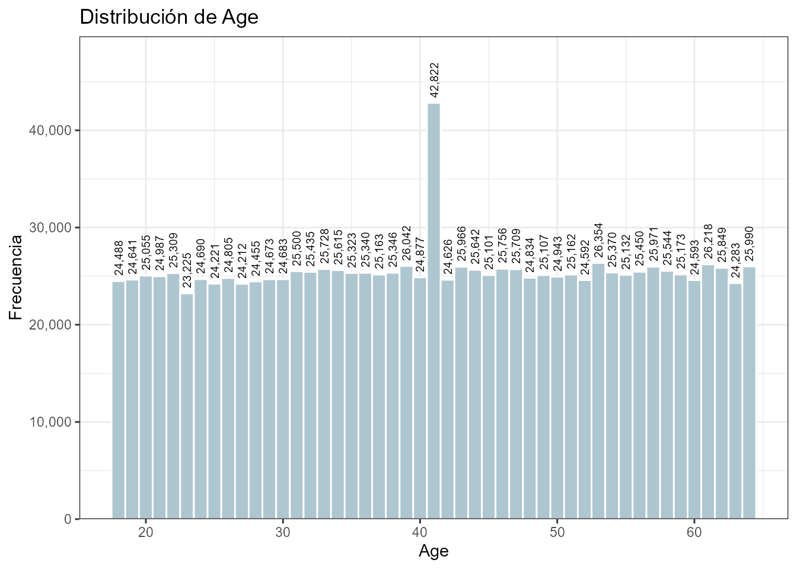
La distribución de Age es prácticamente uniforme entre los 18 y los 64 años: cada edad reúne entre 23,000 y 26,500 registros aproximadamente, sin sesgo hacia ningún extremo. La única irregularidad es el pico en los 41 años, con cerca de 42,800 registros, que corresponde a los 18,705 valores faltantes imputados con la mediana de esta variable (41), por lo que esa edad acumula más registros que las demás.
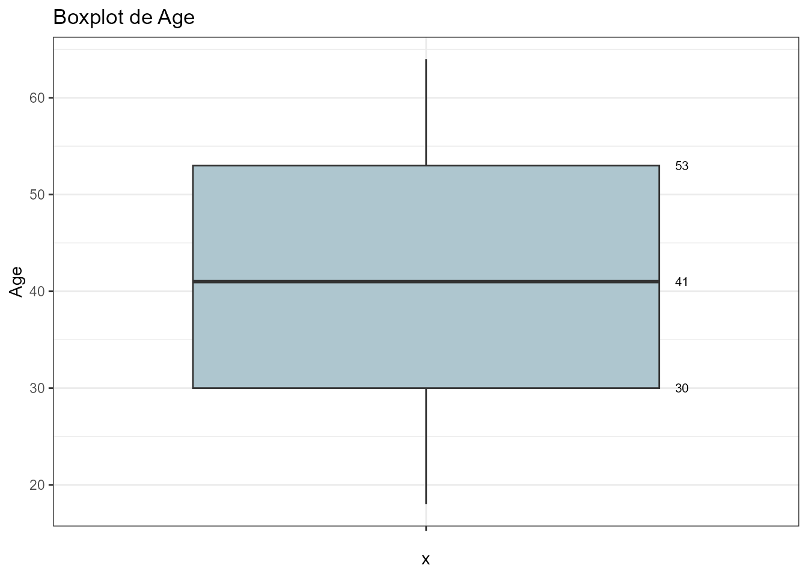
El boxplot de Age confirma lo observado en el histograma: no hay ningún punto atípico, ya que los bigotes cubren todo el rango de datos, desde 18 hasta 64 años, sin valores que se salgan de ese rango. El 50% de los clientes tiene una edad por debajo de 41 años, mientras que el otro 50% está por encima. La caja, que representa el 50% central de los datos, va de 30 a 53 años aproximadamente, lo cual muestra una dispersión bastante amplia y simétrica alrededor del centro, sin evidencia de sesgo hacia ningún lado.
Variable Annual Income:
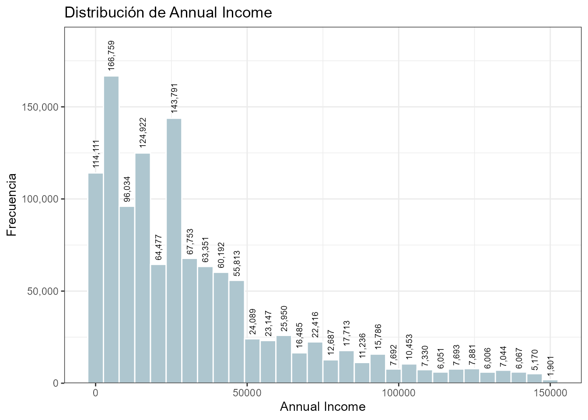
La distribución de Annual Income confirma el sesgo hacia la derecha que ya se había detectado en el resumen numérico (media mayor que el 50%). La mayoría de los clientes se concentra en ingresos bajos, principalmente entre 0 y 30,000, con un pico bastante marcado alrededor de 10,000-15,000. A partir de los 50,000, la frecuencia cae de forma notable y sigue disminuyendo de manera constante hasta casi desaparecer cerca de los 150,000, lo que indica que los ingresos anuales altos son poco frecuentes dentro del conjunto de datos.
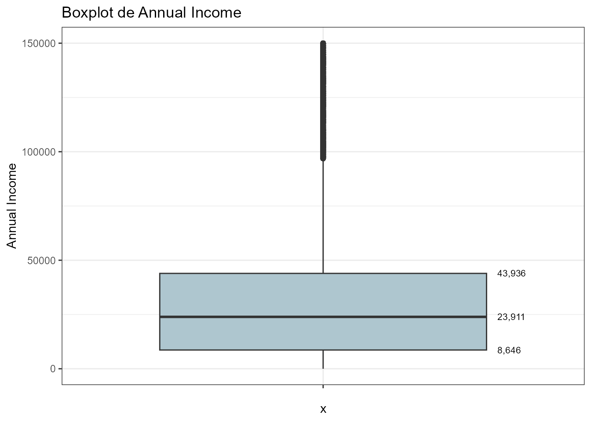
El boxplot de Annual Income refleja el sesgo hacia la derecha que ya se había visto en el histograma. El 50% de los clientes tiene un ingreso anual por debajo de 24,000 aproximadamente, mientras que el otro 50% está por encima de ese valor. La caja, que representa el 50% central de los datos, va desde cerca de 8,000 hasta 44,000. El bigote superior se extiende hasta casi 97,000, y de ahí para arriba aparecen varios puntos atípicos que llegan hasta 150,000, mostrando que existe un grupo pequeño de clientes con ingresos bastante más altos que el resto.
Variable Health Score:
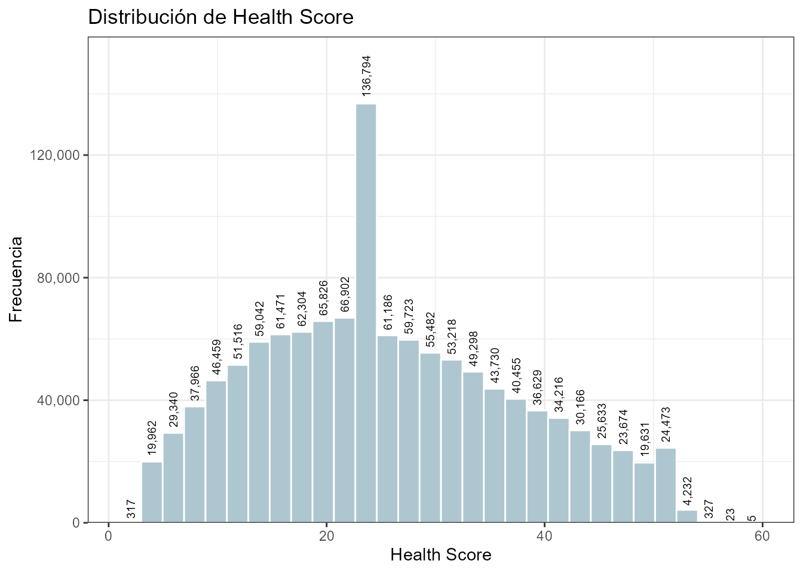
La distribución de Health Score se ve bastante simétrica en general, con forma de campana, lo que coincide con el resumen numérico donde la media y el 50% de los datos eran muy parecidos. Se observa un pico bastante marcado justo en el centro de la distribución, con una frecuencia notablemente más alta que las barras vecinas, lo que podría deberse a los valores imputados con la mediana en esa variable. Fuera de ese pico, la forma general de la distribución muestra un crecimiento gradual desde valores bajos hasta el centro, y luego una disminución igual de gradual hacia valores más altos, sin un sesgo marcado hacia ningún lado.
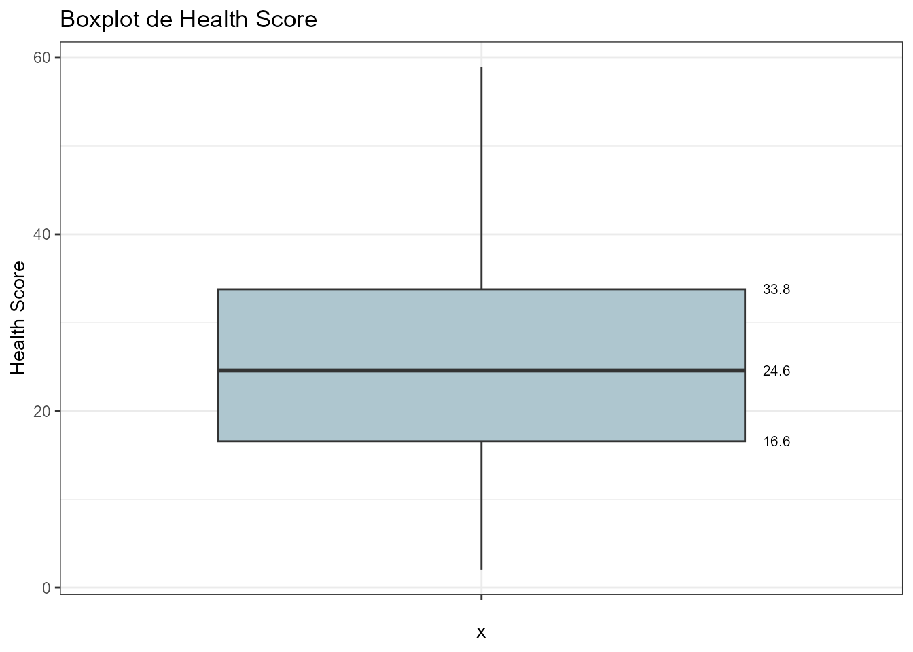
El boxplot de Health Score no muestra ningún punto atípico, ya que los bigotes cubren todo el rango de los datos, desde cerca de 2 hasta casi 59. El 50% de los clientes tiene un Health Score por debajo de 24-25 aproximadamente, mientras que el otro 50% está por encima. La caja, que representa el 50% central de los datos, va de 17 a 34 aproximadamente, mostrando una dispersión moderada y bastante simétrica alrededor del centro, sin evidencia de sesgo hacia ningún lado.
Variable Credit Score:
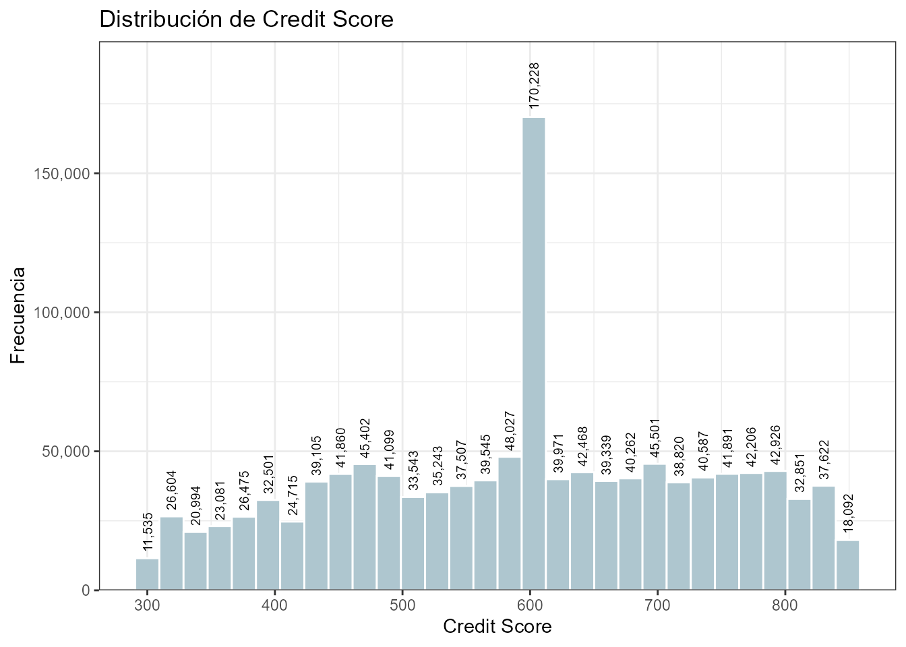
La distribución de Credit Score se ve bastante simétrica en general, con una forma relativamente plana entre 300 y 850, sin un sesgo marcado hacia ningún lado. Se destaca un pico bastante pronunciado alrededor de 590-600, con una frecuencia mucho más alta que el resto de las barras, lo cual probablemente se debe a los valores imputados con la mediana en esa variable. Fuera de ese pico, el resto de las barras se mantiene relativamente constante, entre 20,000 y 45,000 aproximadamente, mostrando que los distintos rangos de puntaje crediticio están bastante bien distribuidos entre los clientes.
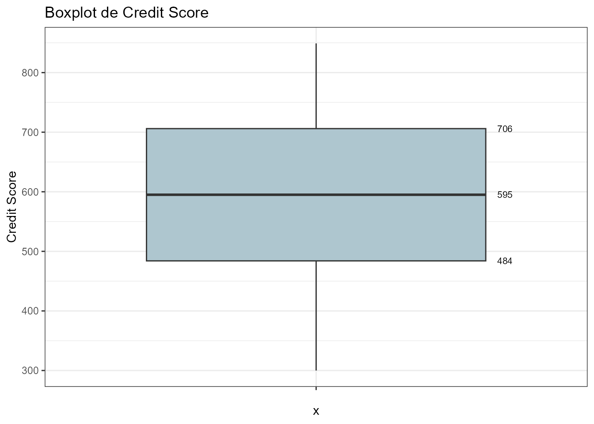
El boxplot de Credit Score no muestra ningún punto atípico, ya que los bigotes cubren todo el rango de los datos, desde 300 hasta 849. El 50% de los clientes tiene un Credit Score por debajo de 595 aproximadamente, mientras que el otro 50% está por encima. La caja, que representa el 50% central de los datos, va de 484 a 706 aproximadamente, mostrando una dispersión moderada y bastante simétrica alrededor del centro, sin evidencia de sesgo hacia ningún lado.
Variable Vehicle Age:
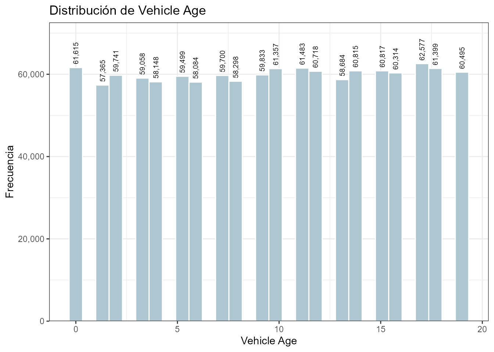
La distribución de Vehicle Age se ve prácticamente uniforme a lo largo de todo el rango, sin ningún pico marcado ni sesgo hacia algún lado. Todas las barras se mantienen en un rango bastante similar, entre 57,000 y 63,000 aproximadamente, lo que indica que los vehículos están bien distribuidos entre 0 y 19 años de antigüedad, sin que ningún rango de edad predomine claramente sobre los demás.
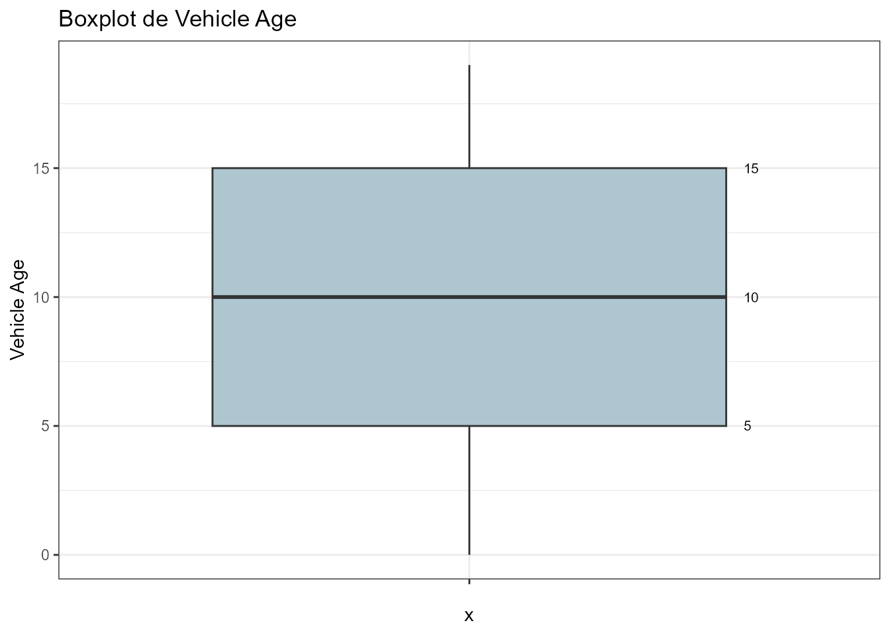
El boxplot de Vehicle Age no muestra ningún punto atípico, ya que los bigotes cubren todo el rango de los datos, desde 0 hasta 19 años. El 50% de los vehículos tiene una antigüedad por debajo de 10 años, mientras que el otro 50% está por encima. La caja, que representa el 50% central de los datos, va de 5 a 15 años aproximadamente, mostrando una dispersión moderada y bastante simétrica alrededor del centro, sin evidencia de sesgo hacia ningún lado.
Variable Insurance Duration:
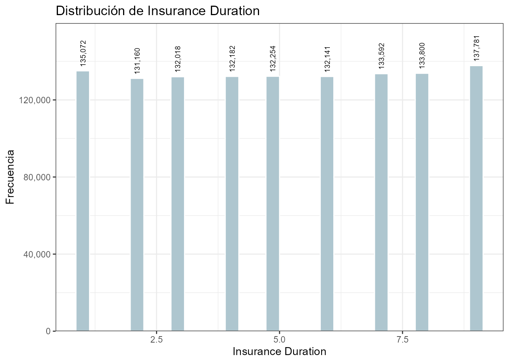
Aquí las nueve barras están prácticamente a la misma altura, todas rondando entre 130,000 y 140,000, lo que deja ver una distribución muy pareja de Insurance Duration entre 1 y 9 años. No hay ninguna duración que destaque sobre las demás, así que los clientes parecen repartirse de forma casi equitativa entre todos los periodos de duración posibles.
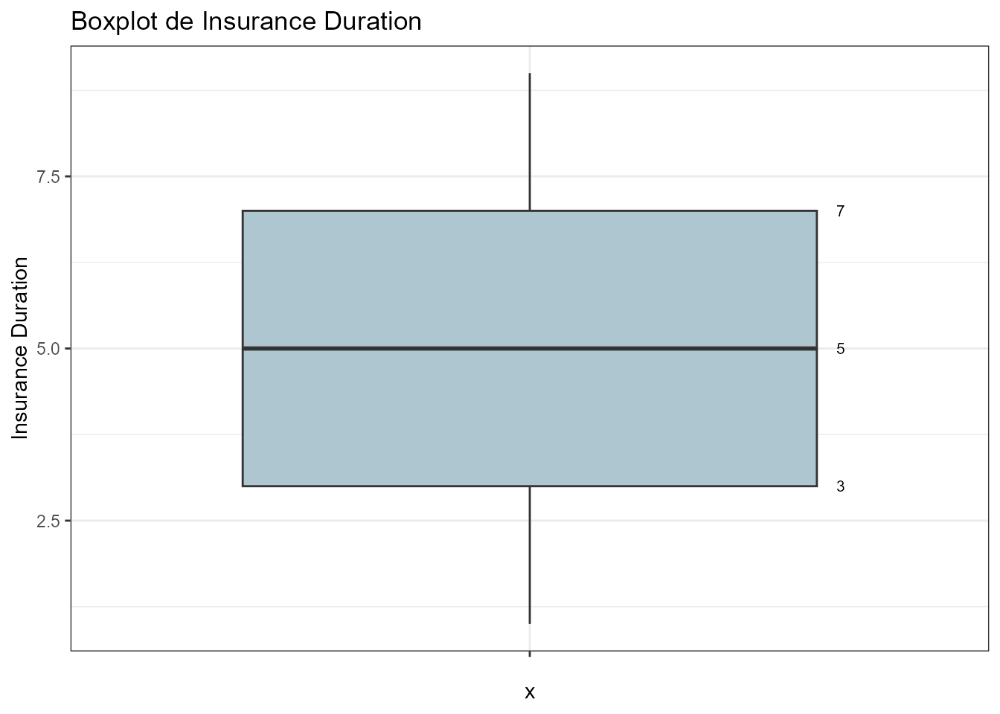
El boxplot de Insurance Duration no presenta valores atípicos, con bigotes que van desde 1 hasta 9 años, cubriendo todo el rango de los datos. La caja se ubica entre 3 y 7 años aproximadamente, y la mediana está justo en 5, dividiendo los datos en dos mitades iguales. Esto confirma la simetría que ya se notaba en el histograma, sin ningún indicio de sesgo.
Variable Number of Dependents:
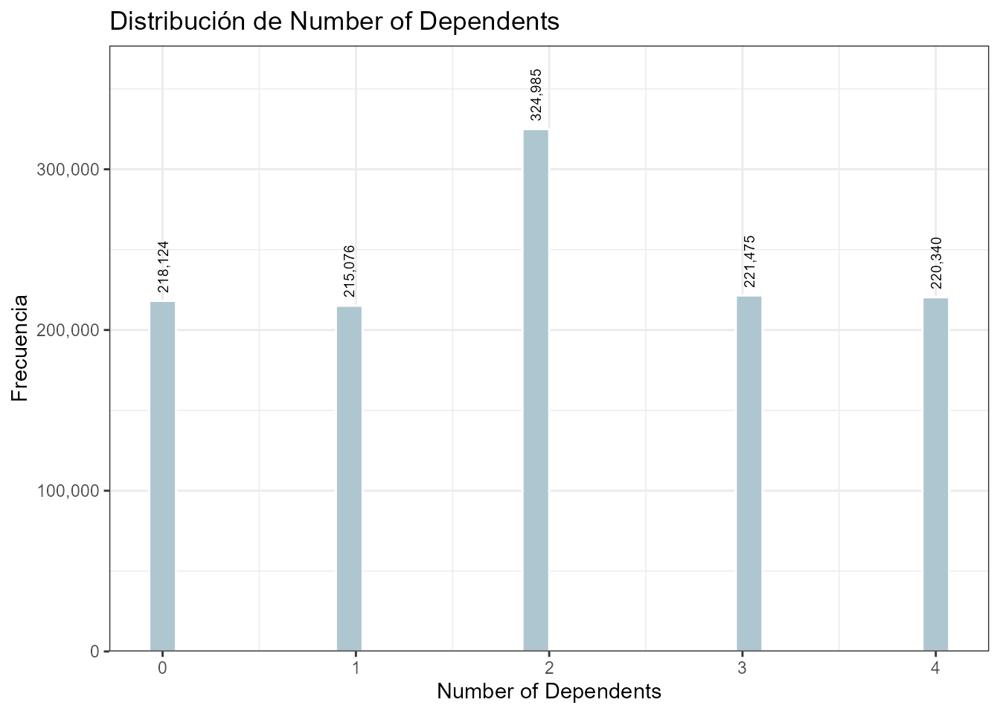
Number of Dependents solo toma cinco valores posibles (0, 1, 2, 3 y 4), y se nota que las categorías 0, 1, 3 y 4 tienen una frecuencia bastante pareja, alrededor de 215,000-220,000 cada una. El valor 2 sobresale claramente con 324,985 registros, ya que ahí se concentraron los 109,672 datos faltantes imputados con la mediana de esta variable. Fuera de ese detalle, no hay un patrón de crecimiento o decrecimiento particular entre las categorías, solo esa diferencia puntual en el 2.
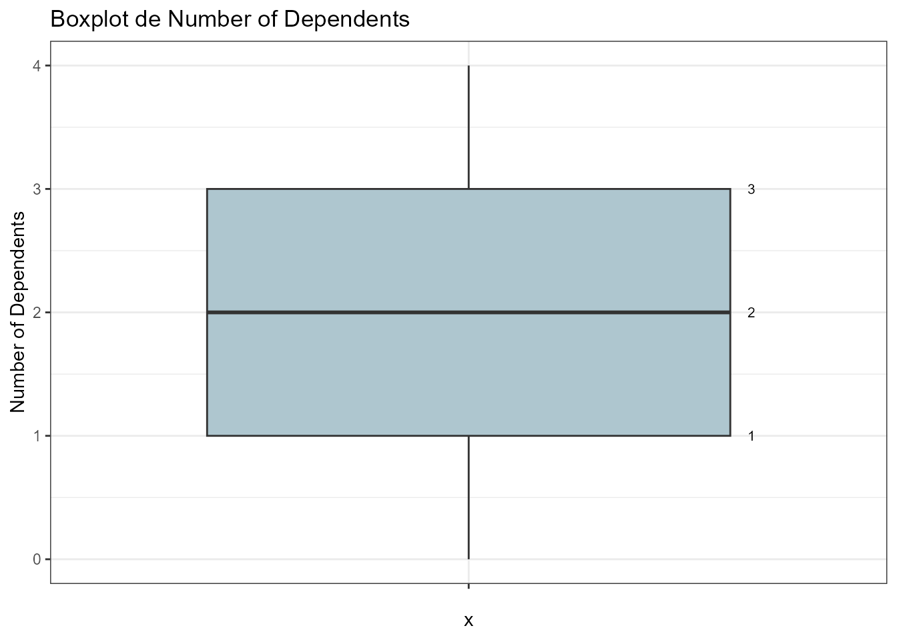
No se aprecian valores atípicos en este boxplot, ya que los bigotes abarcan todo el rango posible, de 0 a 4 dependientes. La caja va de 1 a 3, con la mediana justo en 2, quedando así dividida la mitad de los datos entre esos valores. Al tratarse de una variable con tan pocas categorías, el boxplot resulta bastante simple, pero confirma la simetría que ya se veía en el histograma.
Variable Previous Claims:
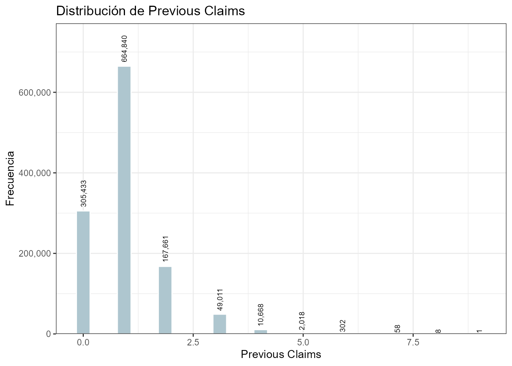
Se observa un sesgo hacia la derecha bastante marcado en esta variable. La mayor parte de los clientes se concentra en el valor 0, con más de 600,000 registros, y a medida que aumenta el número de reclamos previos, la frecuencia va cayendo de forma muy pronunciada: el valor 1 ya baja a menos de la mitad, y de ahí en adelante los valores de 2, 3, 4 y más son cada vez más raros, casi desapareciendo después del 5. Esto tiene bastante sentido, ya que lo esperable es que la mayoría de los asegurados no tenga reclamos previos, y solo una minoría acumule varios.
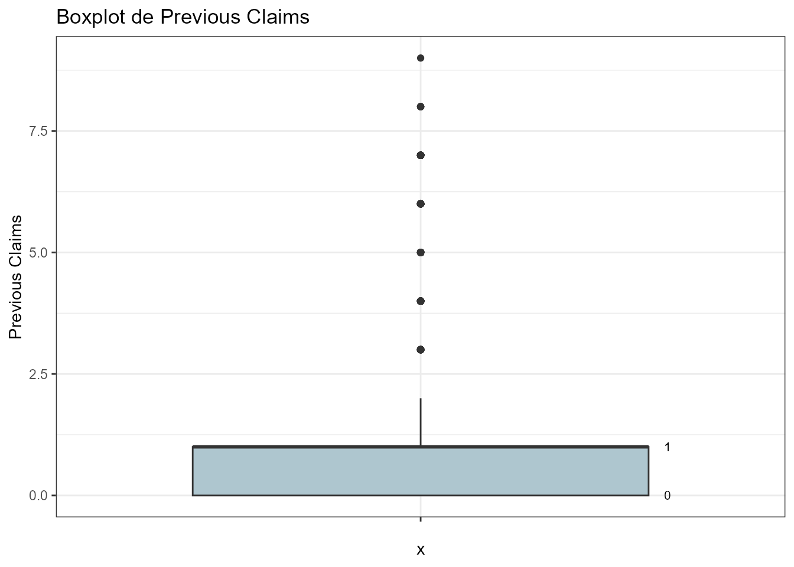
Aquí sí se ven varios puntos considerados atípicos, correspondientes a los clientes con 3, 4, 5, 6, 7, 8 y 9 reclamos previos, ya que se salen del bigote superior que llega hasta 2. La caja va de 0 a 1, con la mediana ubicada en 0, lo que confirma que la mitad de los clientes no ha tenido ningún reclamo previo. Este comportamiento es coherente con lo visto en el histograma: la gran mayoría se concentra en valores bajos, y los pocos casos con varios reclamos aparecen como valores extremos dentro de la variable.
Continuaremos con las variables categóricas
Variable Gender:
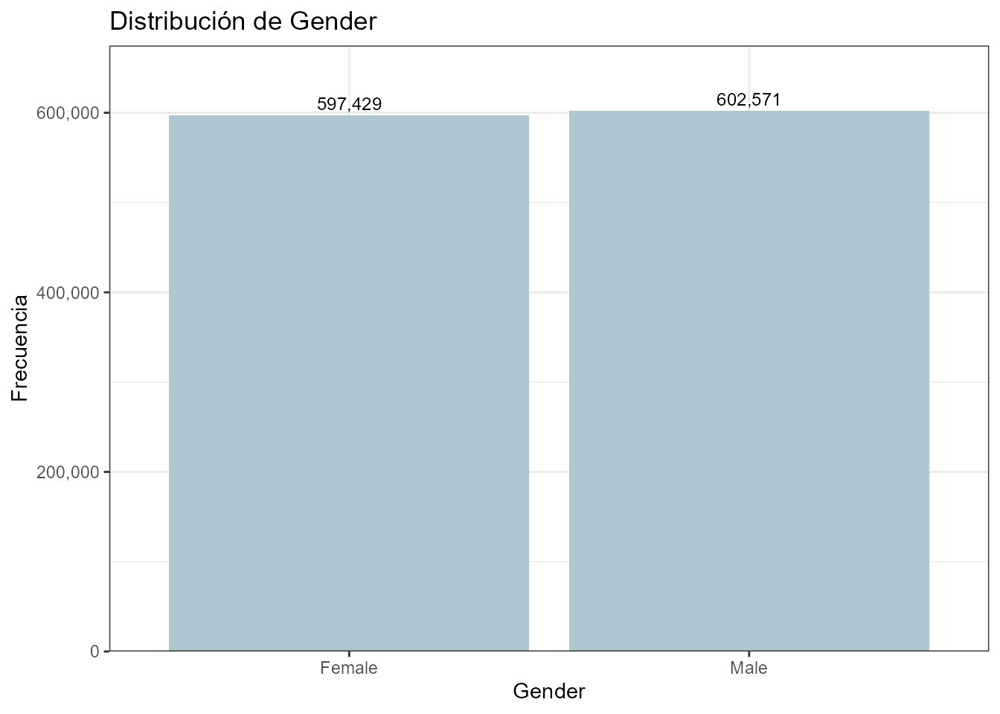
La cantidad de clientes hombres y mujeres es prácticamente igual, ambas categorías rondando los 600,000 registros cada una. No hay ningún desbalance entre géneros dentro del dataset, lo que indica que la muestra está bien equilibrada en cuanto a esta variable.
Variable Marital Status:
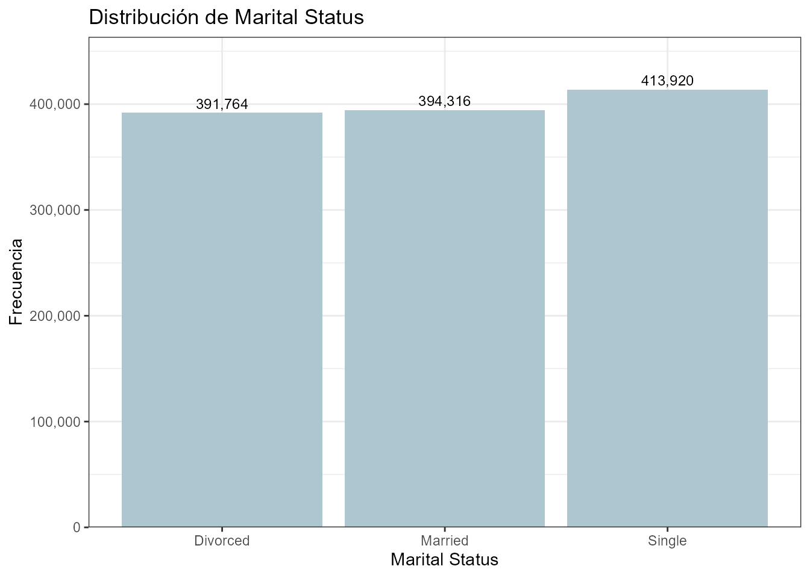
Las tres categorías de estado civil están bastante balanceadas, con valores muy cercanos entre sí. “Single” tiene una frecuencia ligeramente superior a las otras dos, rondando los 415,000 registros, mientras que “Divorced” y “Married” se ubican en torno a los 390,000-395,000 cada uno. No se aprecia una diferencia considerable entre las categorías, por lo que ninguna domina claramente sobre las demás.
Variable Education Level:
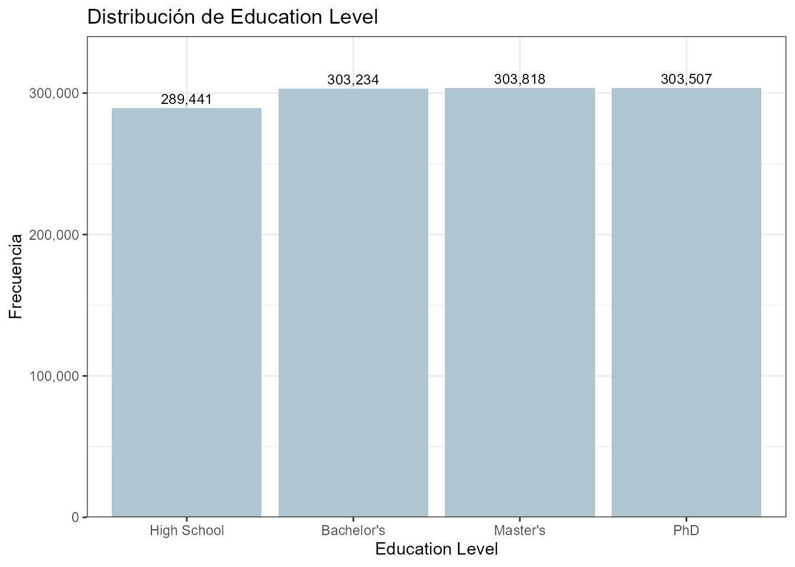
Los cuatro niveles educativos muestran frecuencias bastante parejas entre sí, todas alrededor de 290,000-300,000 registros. “High School” tiene una frecuencia apenas un poco menor a las demás, mientras que “Bachelor’s”, “Master’s” y “PhD” resultan prácticamente idénticos en cantidad. Al respetarse el orden lógico de menor a mayor nivel educativo en el eje, se aprecia que no existe una tendencia hacia algún nivel en particular, sino una distribución equilibrada entre todos.
Variable Occupation:
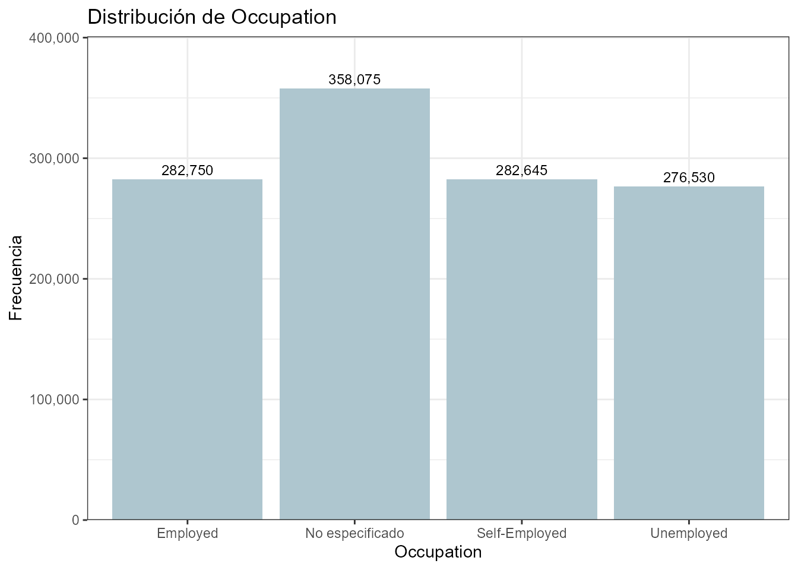
La categoría “No especificado” resulta ser la más frecuente de todas, superando los 350,000 registros, lo cual tiene sentido ya que ahí se agrupó ese casi 30% de datos que originalmente estaban vacíos. Las otras tres categorías (“Employed”, “Self-Employed” y “Unemployed”) se mantienen bastante parejas entre sí, cada una alrededor de 280,000 registros, sin diferencias notables entre ellas.
Variable Location:
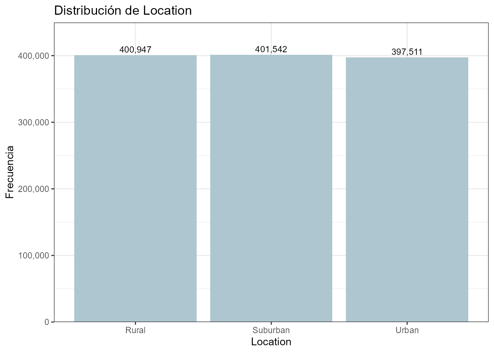
Las tres ubicaciones están casi perfectamente equilibradas, todas alrededor de 400,000 registros cada una. No se distingue ninguna diferencia relevante entre Rural, Suburban y Urban, así que los clientes están repartidos de forma prácticamente uniforme entre las tres zonas geográficas.
Variable Policy Type:
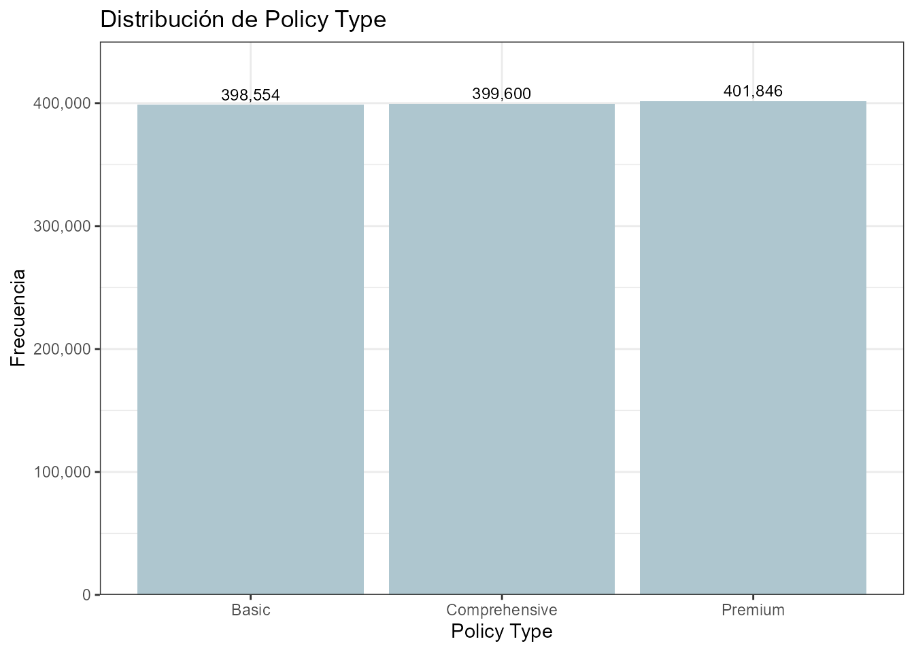
Los tres tipos de póliza tienen frecuencias prácticamente idénticas, todas alrededor de 400,000 registros. Basic, Comprehensive y Premium están repartidos de manera casi perfectamente equitativa entre los clientes, sin que ninguno predomine sobre los otros.
Variable Customer Feedback:
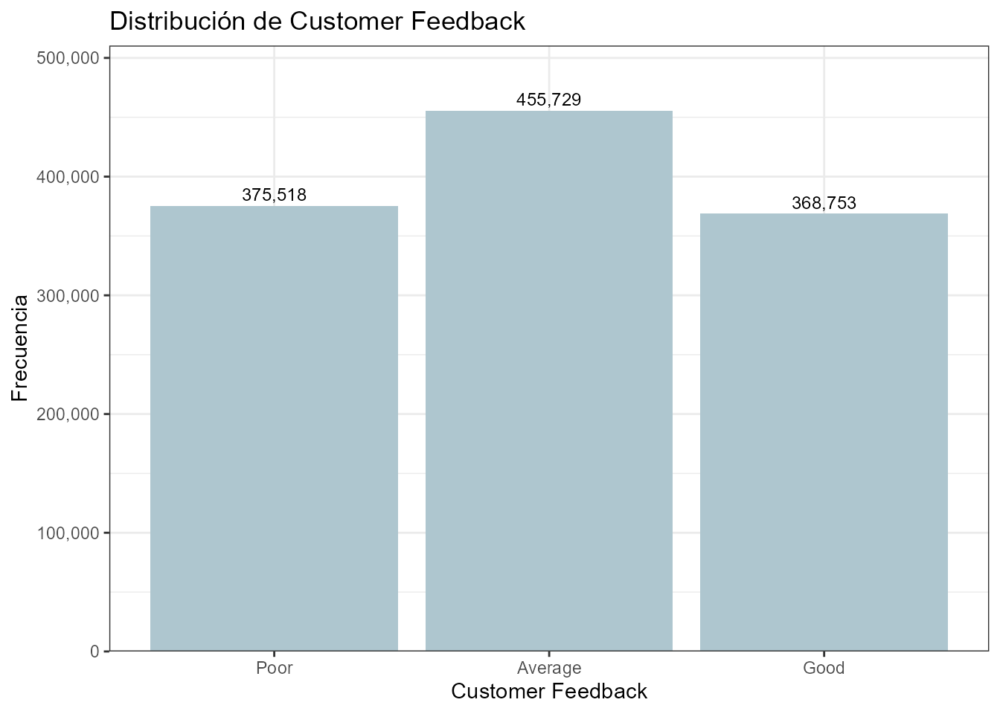
La categoría “Average” se destaca ligeramente por encima de las otras dos, acercándose a los 450,000 registros, probablemente porque ahí se concentraron los datos imputados con la moda de esta variable. “Poor” y “Good” quedan bastante parejos entre sí, ambos alrededor de 370,000-380,000 registros. En general, no hay un desbalance drástico entre las tres categorías, aunque “Average” sí resulta ser la opinión más común entre los clientes.
Variable Smoking Status:
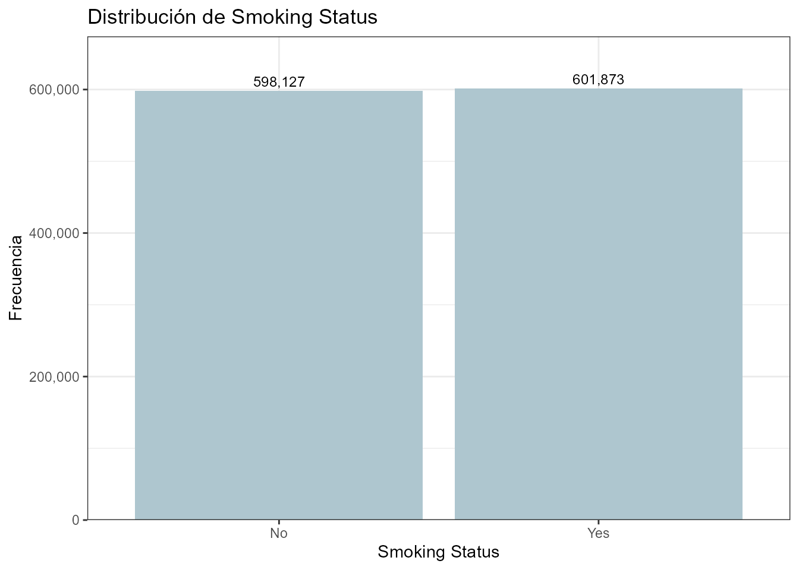
Los clientes fumadores y no fumadores están casi igual de representados, ambas categorías rondando los 600,000 registros. No se observa un desbalance importante entre “No” y “Yes”, así que la muestra está bastante equilibrada respecto a este hábito.
Variable Exercise Frequency:
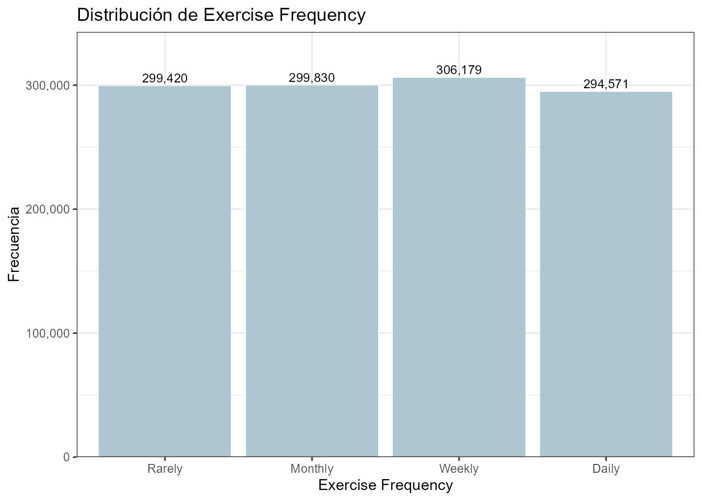
Las cuatro categorías de frecuencia de ejercicio se mantienen muy parejas, todas alrededor de 295,000-305,000 registros. “Weekly” tiene una frecuencia apenas un poco mayor que las demás, mientras que “Daily” queda ligeramente por debajo. En general, respetando el orden lógico de menor a mayor frecuencia, no se aprecia una tendencia clara hacia algún hábito de ejercicio en particular, sino una distribución bastante equilibrada entre todos.
Variable Property Type:
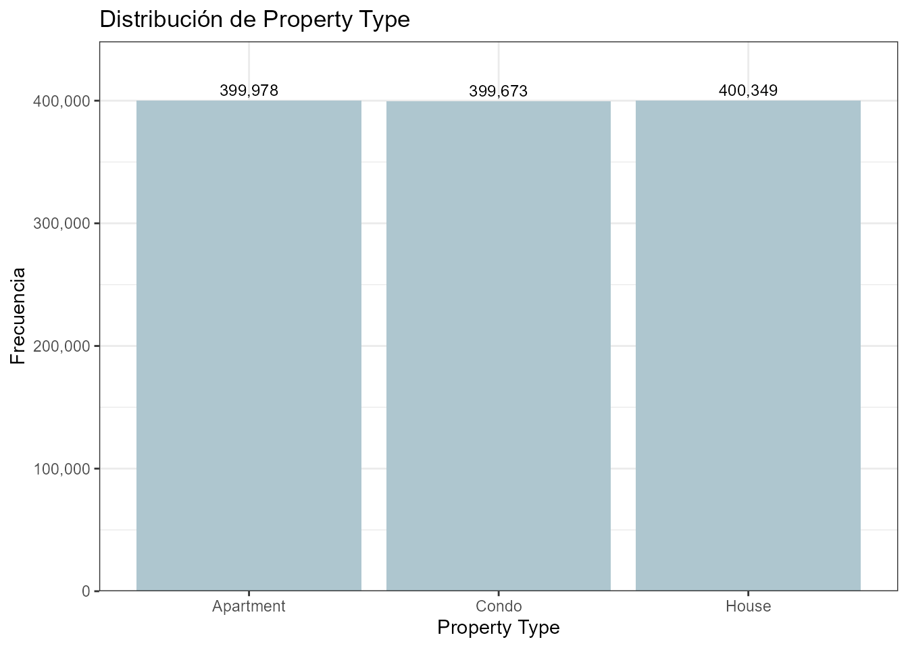
Las tres categorías de tipo de propiedad están casi perfectamente equilibradas, todas rondando los 400,000 registros. No hay ningún tipo de vivienda que predomine sobre los demás, así que Apartment, Condo y House se reparten de forma prácticamente uniforme entre los clientes.
2.10 Análisis bivariado (Variable característica vs Variable respuesta)
Una vez caracterizadas las variables de forma individual, el siguiente paso es analizar cómo se relacionan con la variable respuesta, Premium Amount, con el fin de identificar posibles patrones o tendencias que puedan ser útiles más adelante.
Age vs Premium Amount:
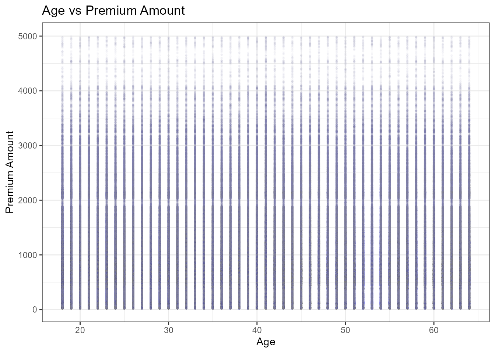
Se aprecia que, para cualquier edad, la mayor concentración de valores de Premium Amount está entre 0 y 2,000 aproximadamente, coincidiendo con lo que ya se había visto en el histograma de esa variable, donde se notaba el pico principal justo en ese rango. Por encima de 2,000, los puntos se vuelven más dispersos, indicando que hay menos clientes con primas altas, sin importar la edad que tengan. En general, se confirma que no existe una relación clara entre Age y Premium Amount, ya que el patrón de dispersión se mantiene prácticamente igual a lo largo de todas las edades.
Annual Income vs Premium Amount:
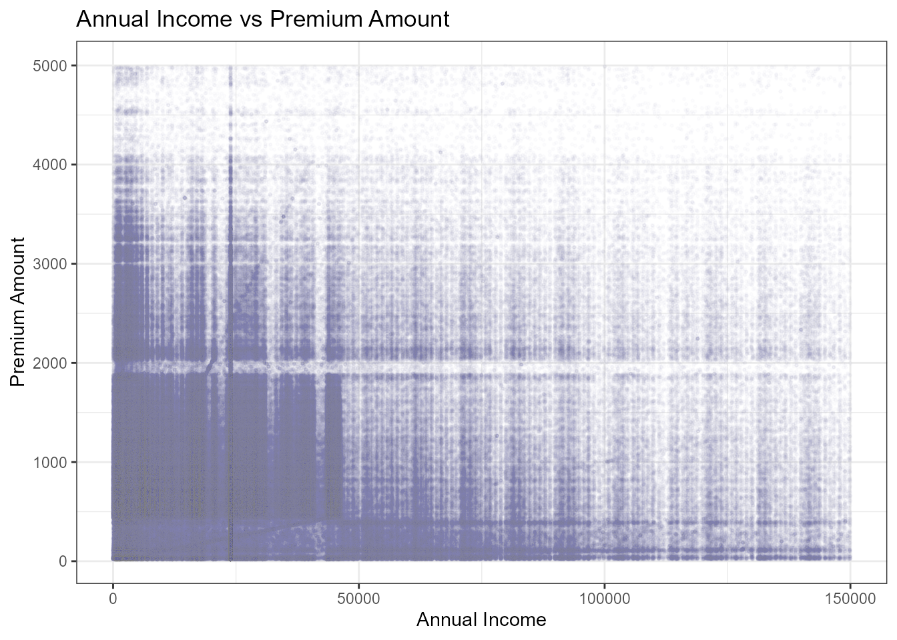
Se observa que, para prácticamente todos los niveles de ingreso anual, los valores de Premium Amount se distribuyen a lo largo de todo el rango, desde 0 hasta 5,000. Sin embargo, se nota una mayor concentración de puntos en la zona de ingresos bajos, entre 0 y 50,000, especialmente en primas entre 0 y 2,000, mientras que a partir de los 50,000 la cantidad de puntos disminuye considerablemente, dejando ver menos densidad de datos en esa zona. Esto sugiere que no existe una relación lineal clara entre Annual Income y Premium Amount, ya que el comportamiento de la prima parece mantenerse similar independientemente del nivel de ingreso del cliente.
Health Score vs Premium Amount:
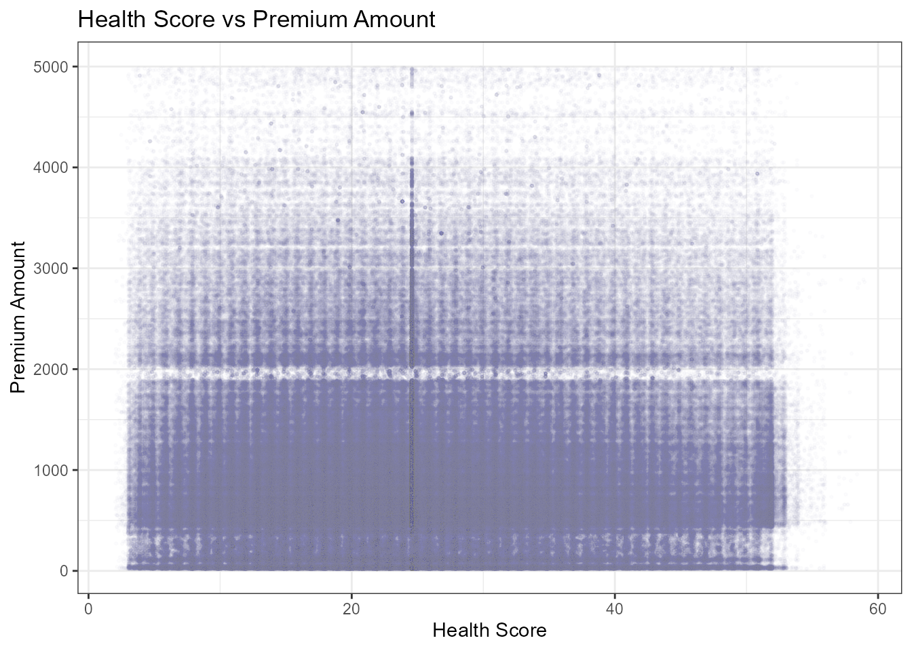
Se observa que, para prácticamente todos los valores de Health Score, los datos de Premium Amount se concentran principalmente entre 0 y 2,000, coincidiendo con lo que ya se había visto en el histograma de la prima. Destaca una línea vertical bastante marcada alrededor de 25, con una densidad de puntos considerablemente mayor que el resto, lo cual probablemente se debe a los valores imputados con la mediana en esa variable. Fuera de ese detalle, no se aprecia una relación clara entre Health Score y Premium Amount, ya que el patrón de dispersión se mantiene bastante similar a lo largo de todo el rango de puntuación de salud.
Credit Score vs Premium Amount:
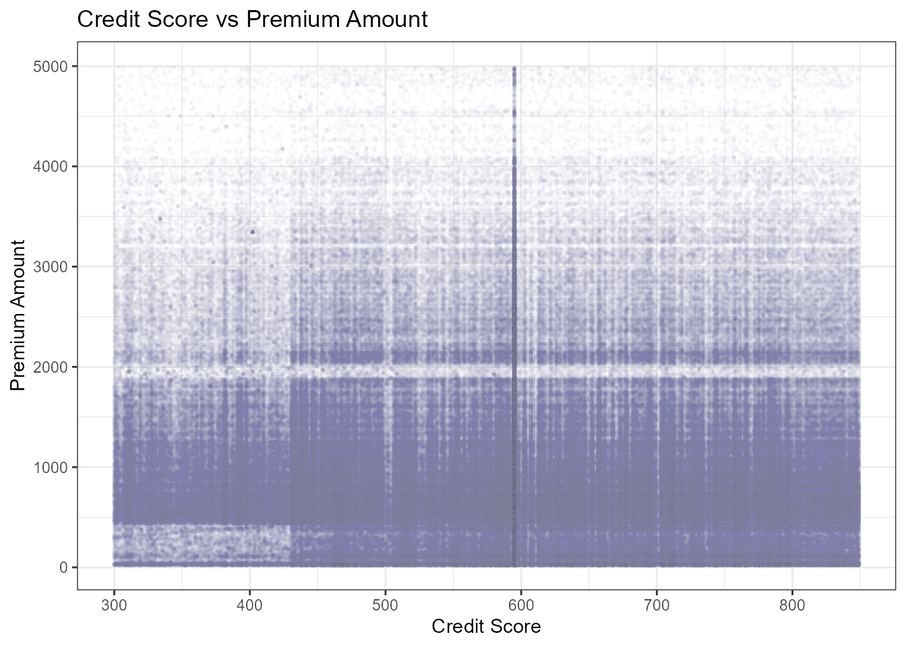
Se aprecia una línea vertical bastante marcada alrededor de 590-600, con mayor densidad de puntos que el resto, lo cual coincide con los valores imputados con la mediana en esta variable. Fuera de ese detalle, la mayor concentración de datos se mantiene entre 0 y 2,000 en Premium Amount, sin importar el puntaje de crédito del cliente, mientras que por encima de 2,000 los puntos se vuelven progresivamente más dispersos. En general, no se observa un patrón claro que relacione Credit Score con Premium Amount, ya que el comportamiento de la prima parece bastante similar a lo largo de todo el rango de puntaje crediticio.
Vehicle Age vs Premium Amount:
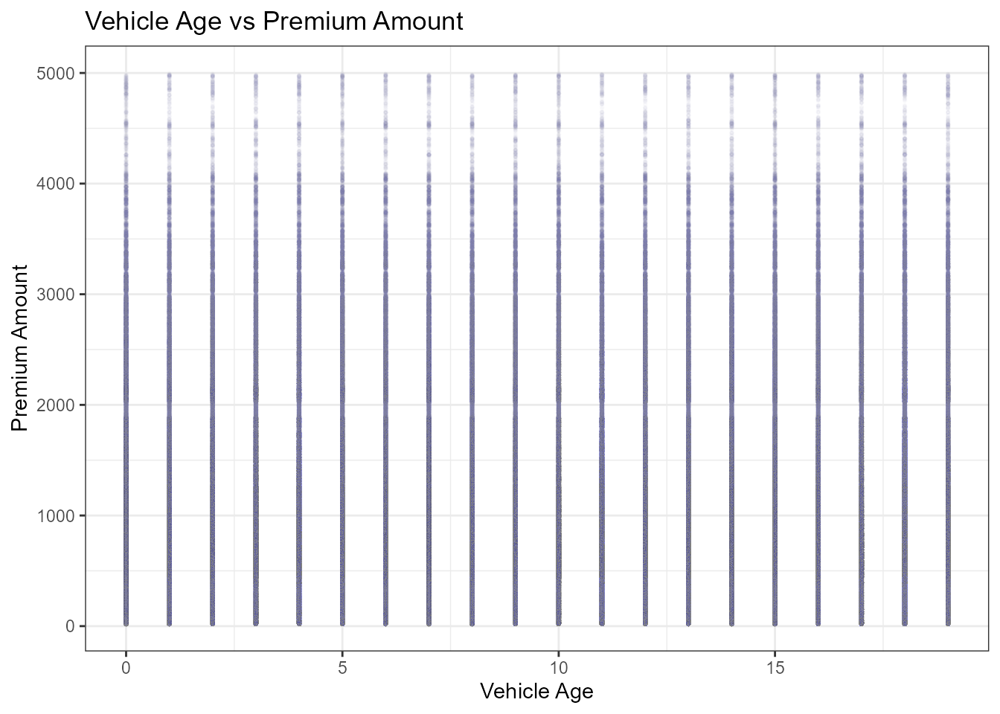
Para cada valor de Vehicle Age, los datos de Premium Amount se distribuyen de manera muy similar entre sí, cubriendo todo el rango desde 0 hasta 5,000, con mayor concentración en la parte baja, entre 0 y 2,000. No se aprecia ninguna tendencia ni patrón que relacione la antigüedad del vehículo con el monto de la prima, ya que las líneas correspondientes a cada edad se ven prácticamente idénticas en forma y densidad.
Insurance Duration vs Premium Amount:
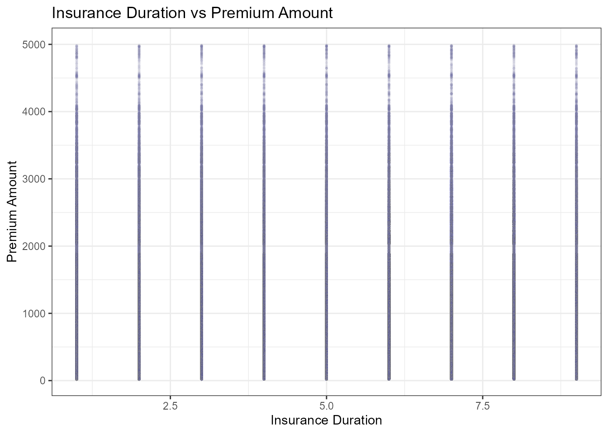
Al igual que con Vehicle Age, cada valor de Insurance Duration muestra una distribución de Premium Amount muy similar entre sí, abarcando todo el rango desde 0 hasta 5,000 y con mayor concentración de puntos en la parte baja. No se identifica ninguna relación entre la duración de la póliza y el monto de la prima, ya que las nueve líneas correspondientes a cada duración lucen prácticamente iguales en forma y densidad.
Number of Dependents vs Premium Amount:
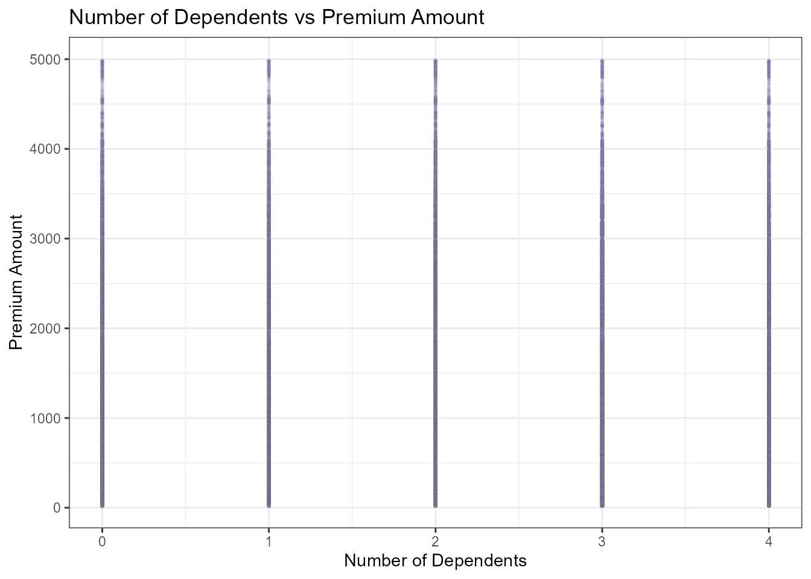
Cada valor de Number of Dependents muestra una distribución de Premium Amount prácticamente idéntica, con datos que van desde 0 hasta 5,000 y mayor concentración en la parte baja. No se aprecia ninguna relación entre la cantidad de dependientes de un cliente y el monto de su prima, ya que las cinco líneas se ven muy similares entre sí tanto en forma como en densidad.
Previous Claims vs Premium Amount:
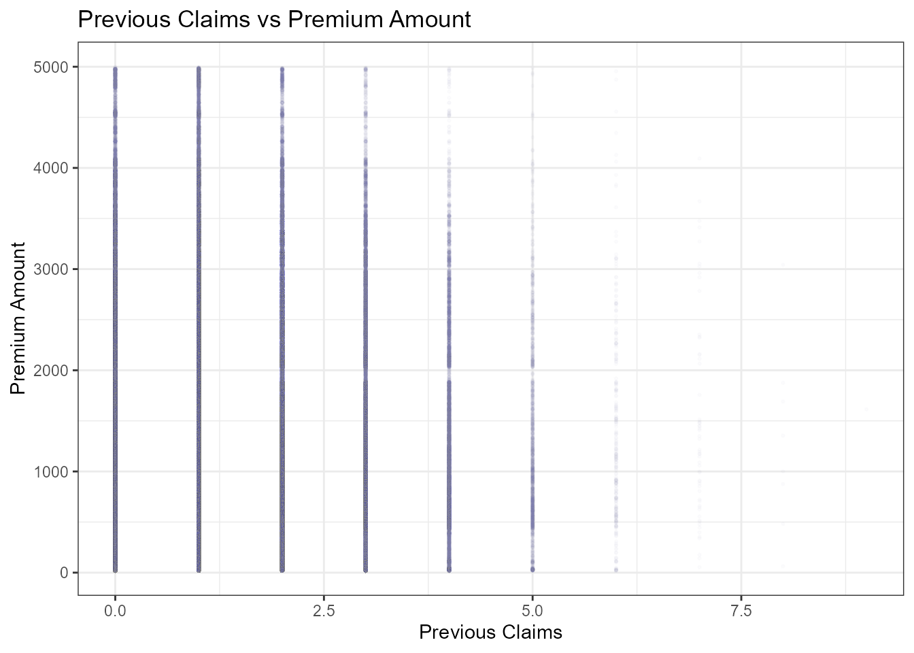
Se observa una diferencia clara respecto a las demás variables numéricas: mientras que en 0 y 1 reclamo previo hay bastantes datos y la línea se ve bien marcada, a partir de 2 reclamos en adelante la cantidad de puntos disminuye notablemente, hasta casi desaparecer en 8 y 9. Esto coincide con la distribución que ya se había visto en el histograma de Previous Claims, donde la mayoría de los clientes se concentra en pocos o ningún reclamo. Dentro de cada nivel, el rango de Premium Amount se mantiene similar, yendo desde 0 hasta 5,000, sin que se note un desplazamiento hacia valores más altos o más bajos conforme aumentan los reclamos. Esto sugiere que Previous Claims no tiene, al menos de forma individual, una relación directa con el monto de la prima.
Gender vs Premium Amount:
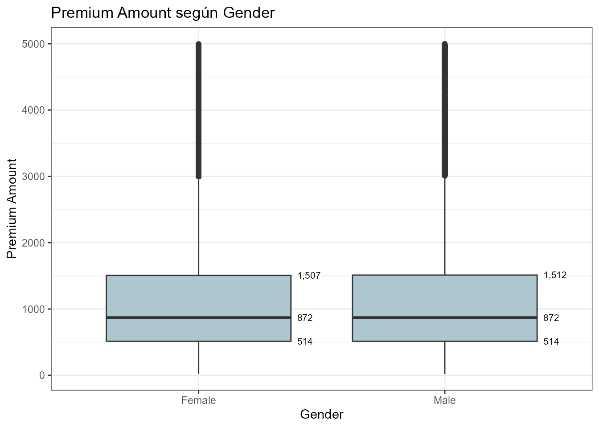
Los boxplots de ambos géneros se ven prácticamente idénticos, con la mediana ubicada cerca de 900 en ambos casos, y la caja abarcando de 500 a 1,500 aproximadamente tanto para Female como para Male. Los bigotes superiores llegan hasta cerca de 3,000, con varios puntos atípicos por encima que se extienden hasta 5,000 en ambos grupos. Esto indica que el género del cliente no parece tener ninguna influencia sobre el monto de la prima, ya que la distribución es prácticamente la misma para ambas categorías.
Marital Status vs Premium Amount:
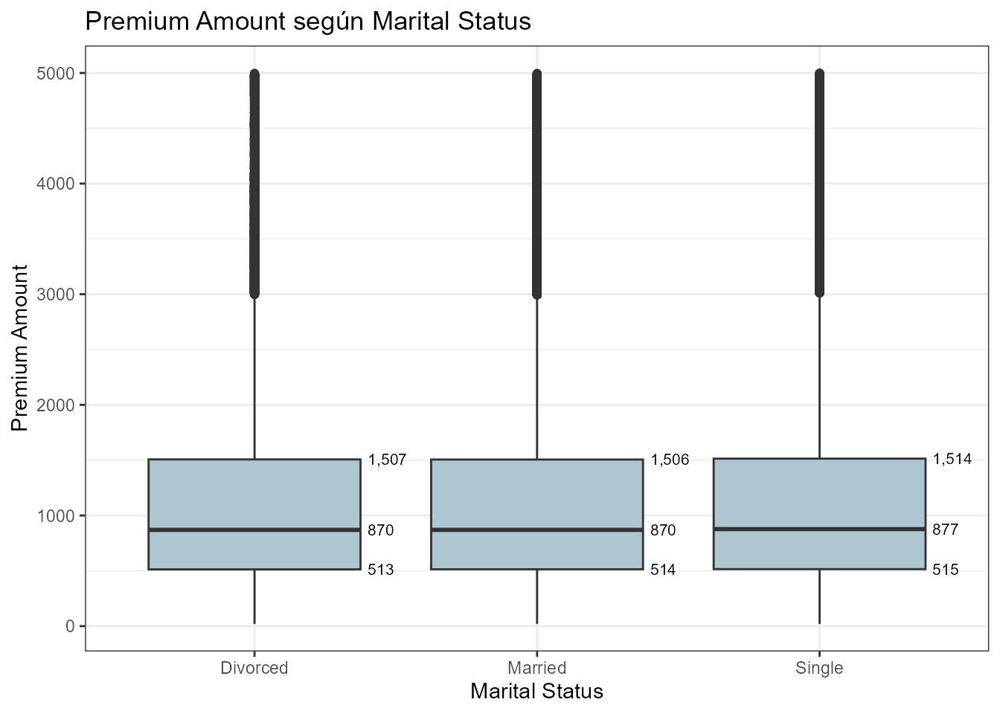
Los tres estados civiles muestran distribuciones muy similares entre sí, con la mediana ubicada cerca de 900 en los tres casos, y la caja abarcando aproximadamente de 500 a 1,500. Los bigotes superiores llegan hasta alrededor de 3,000, con puntos atípicos por encima que se extienden hasta 5,000 en las tres categorías. Esto sugiere que el estado civil del cliente no influye de forma notable en el monto de su prima, ya que Divorced, Married y Single presentan un comportamiento prácticamente igual.
Education Level vs Premium Amount:
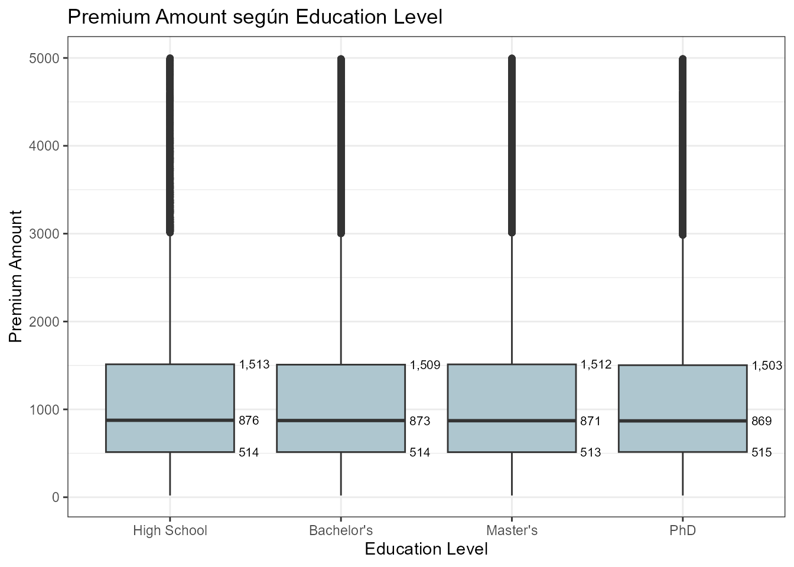
Los cuatro niveles educativos muestran un comportamiento prácticamente idéntico, con la mediana cerca de 900, la caja entre 500 y 1,500, y bigotes superiores hasta 3,000 con puntos atípicos que llegan hasta 5,000 en todos los casos. Ni High School, ni Bachelor’s, Master’s o PhD parecen tener alguna influencia sobre el monto de la prima, ya que las cuatro categorías presentan distribuciones muy similares entre sí.
Occupation vs Premium Amount:
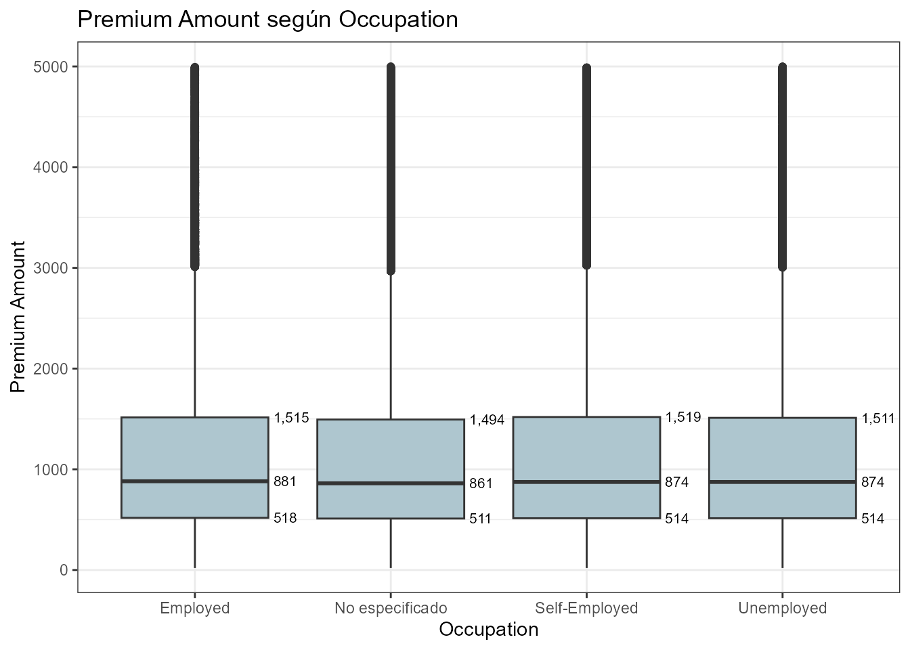
Las cuatro categorías de ocupación se comportan de manera muy similar entre sí, con la mediana rondando los 900, la caja entre 500 y 1,500, y bigotes superiores que llegan hasta 3,000 con puntos atípicos hasta 5,000 en todos los casos. Esto incluye a “No especificado”, que a pesar de agrupar los datos que originalmente faltaban, no muestra ninguna diferencia notable frente a Employed, Self-Employed o Unemployed, sugiriendo que la ocupación del cliente no tiene una relación aparente con el monto de su prima.
Location vs Premium Amount:
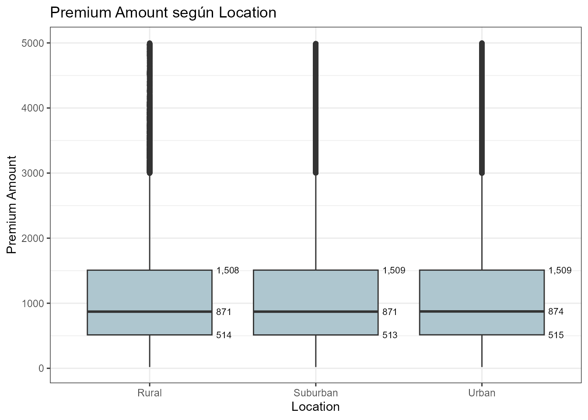
Rural, Suburban y Urban presentan distribuciones prácticamente iguales, con la mediana alrededor de 900, la caja entre 500 y 1,500, y bigotes superiores hasta 3,000 con puntos atípicos que se extienden hasta 5,000 en las tres zonas. La ubicación geográfica del cliente no parece afectar el monto de la prima, ya que el patrón se repite de forma casi idéntica sin importar el tipo de zona.
Policy Type vs Premium Amount:
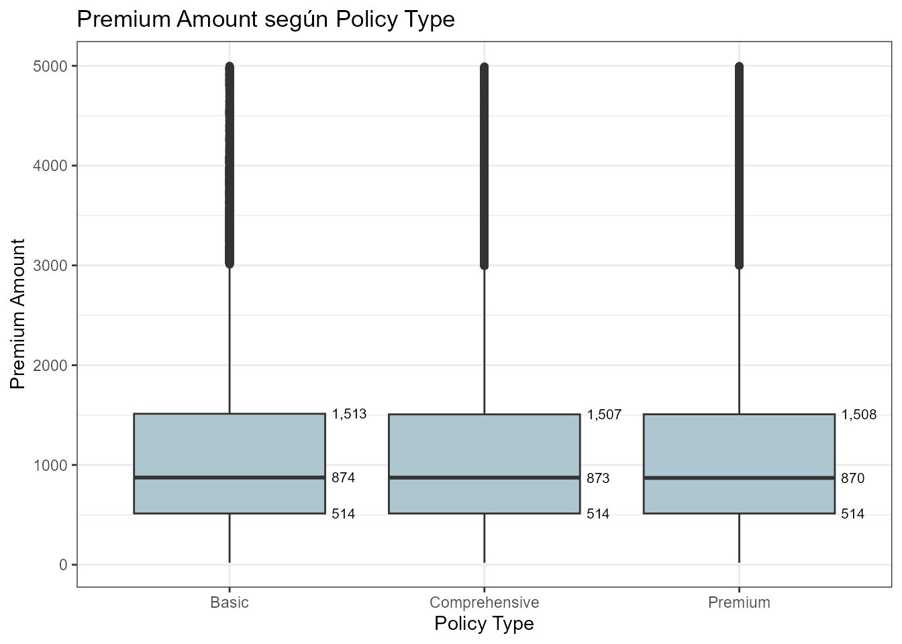
Basic, Comprehensive y Premium muestran distribuciones prácticamente idénticas, con la mediana cerca de 900, la caja entre 500 y 1,500, y bigotes superiores hasta 3,000 con puntos atípicos que llegan hasta 5,000 en las tres categorías. Resulta llamativo que el tipo de póliza no tenga una influencia visible sobre el monto de la prima, ya que uno esperaría que una póliza “Premium” implicara primas más altas que una “Basic”, pero el comportamiento es prácticamente el mismo entre las tres.
Customer Feedback vs Premium Amount:
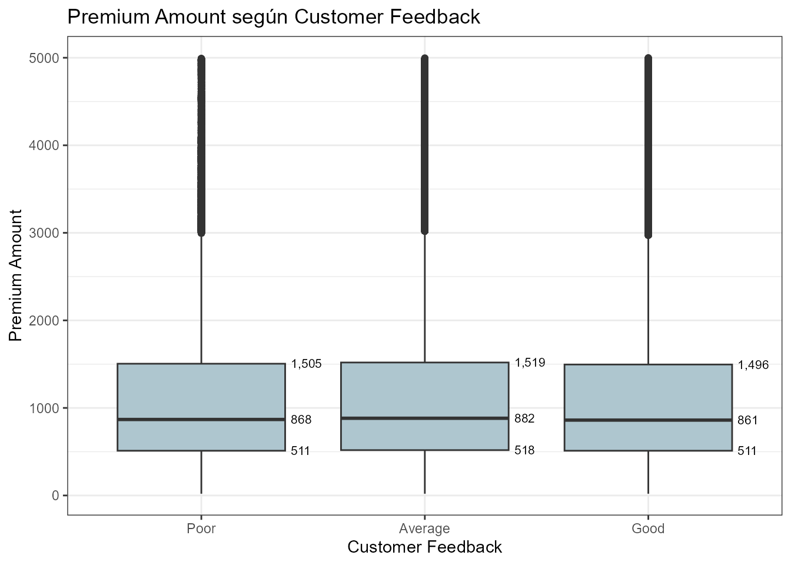
Poor, Average y Good presentan distribuciones muy similares entre sí, con la mediana cerca de 900, la caja entre 500 y 1,500, y bigotes superiores hasta 3,000 con puntos atípicos que llegan hasta 5,000 en las tres categorías. Sorprende que la opinión del cliente no se traduzca en diferencias visibles en el monto de la prima, ya que se mantiene el mismo comportamiento sin importar si el feedback fue negativo, neutro o positivo.
Smoking Status vs Premium Amount:
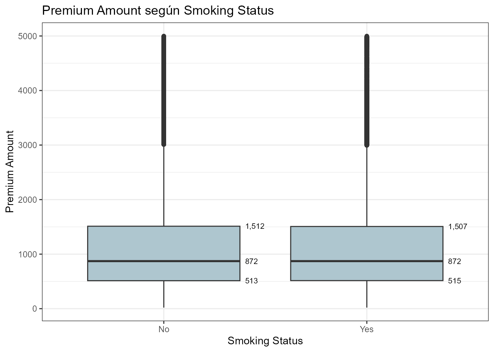
No y Yes muestran distribuciones prácticamente idénticas, con la mediana cerca de 900, la caja entre 500 y 1,500, y bigotes superiores hasta 3,000 con puntos atípicos que llegan hasta 5,000 en ambos grupos. Llama la atención que fumar o no fumar no tenga ningún efecto visible sobre el monto de la prima, cuando normalmente se esperaría que este hábito influyera en el riesgo evaluado por la aseguradora.
Exercise Frequency vs Premium Amount:
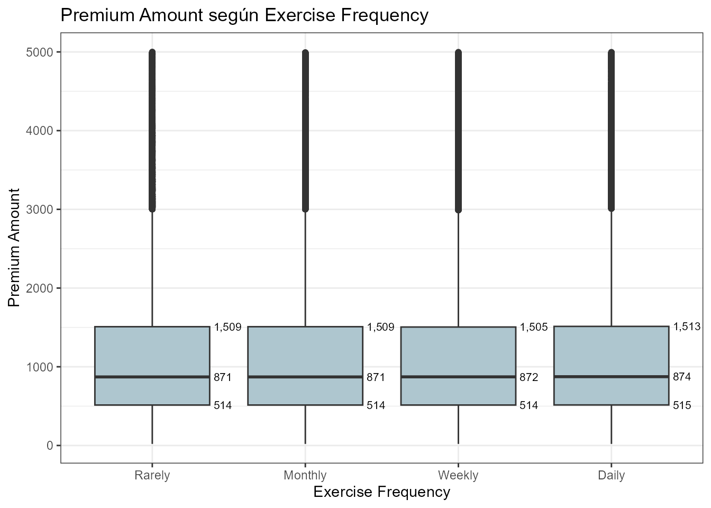
Rarely, Monthly, Weekly y Daily mantienen distribuciones bastante parecidas entre sí, con la mediana cerca de 900, la caja entre 500 y 1,500, y bigotes superiores hasta 3,000 con puntos atípicos que llegan hasta 5,000 en las cuatro categorías. Aunque se esperaría que hacer ejercicio con más frecuencia estuviera asociado a primas más bajas, el patrón se repite de forma casi idéntica sin importar qué tan seguido se ejercite el cliente.
Property Type vs Premium Amount:
Apartment, Condo y House presentan distribuciones casi idénticas, con la mediana cerca de 900, la caja entre 500 y 1,500, y bigotes superiores hasta 3,000 con puntos atípicos que llegan hasta 5,000 en las tres categorías. El tipo de propiedad tampoco parece influir en el monto de la prima, cerrando así el mismo patrón que se repitió en todas las variables categóricas analizadas.
2.11 Apéndice gráfico de asociaciones entre predictores
Se presenta la matriz de correlación y dispersión de las variables numéricas, calculada con los 1,200,000 registros. Como las variables no son normales, la correlación mostrada es la de Spearman.
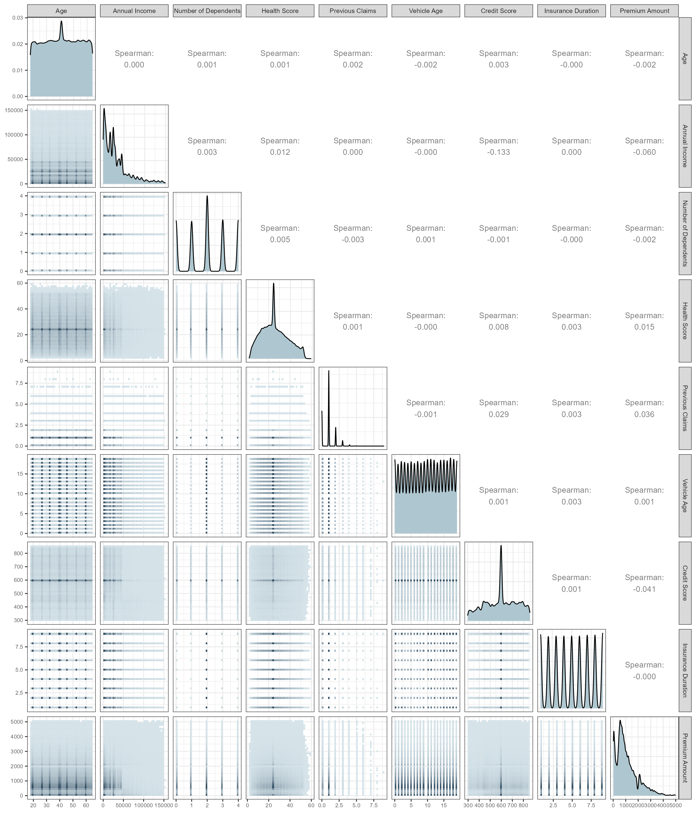
La matriz de correlación muestra que prácticamente no existe asociación monótona relevante entre las variables numéricas del dataset, incluyendo Premium Amount, ya que la mayoría de los coeficientes son cercanos a \(0\). La única excepción es el par Annual Income y Credit Score (\(\rho_s = -0.133\)), que presenta una relación negativa débil. En la diagonal, las densidades de Previous Claims, Vehicle Age y Number of Dependents se ven en forma de picos porque son variables discretas.
A continuación, se analizará con más detalle la relación entre cada par de variables numéricas, con el fin de complementar lo observado en la matriz de correlación general.
Age vs Annual Income
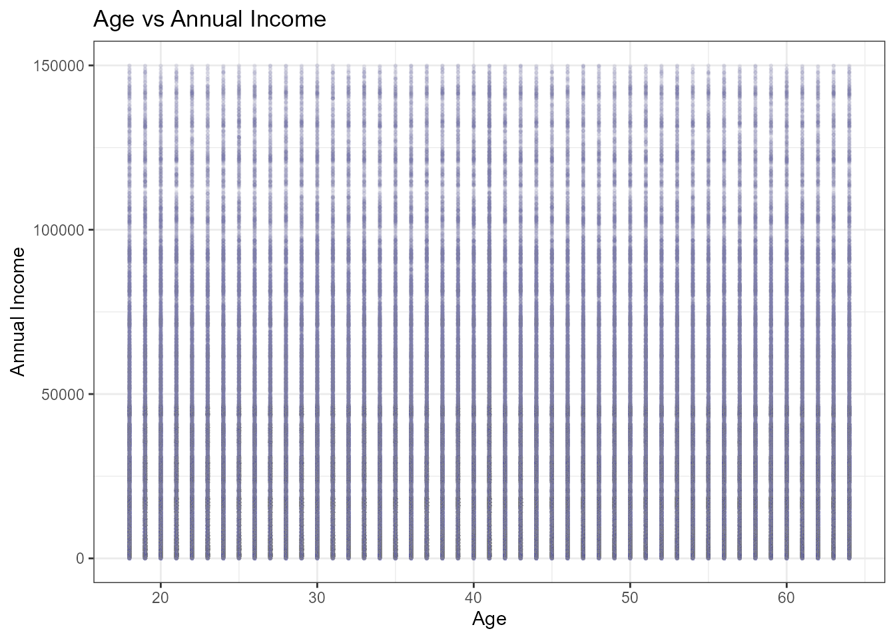
Para prácticamente todas las edades, los valores de Annual Income se distribuyen a lo largo de todo el rango, desde 0 hasta 150,000, con mayor concentración de puntos en la parte baja, entre 0 y 50,000 aproximadamente. No se aprecia ninguna tendencia que relacione la edad del cliente con su ingreso anual, ya que el patrón de dispersión se mantiene prácticamente igual sin importar la edad.
Age vs Health Score
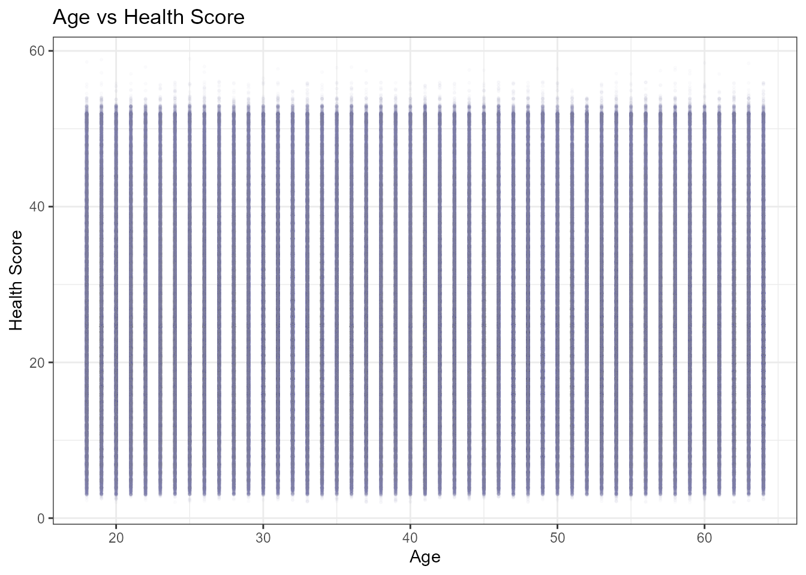
Para cada edad, los valores de Health Score se distribuyen de forma bastante pareja a lo largo de todo el rango, entre 2 y 59 aproximadamente, sin concentrarse especialmente en ninguna zona. No se observa ninguna relación entre la edad del cliente y su puntaje de salud, ya que el patrón de dispersión se mantiene prácticamente idéntico sin importar la edad.
Age vs Previous Claims
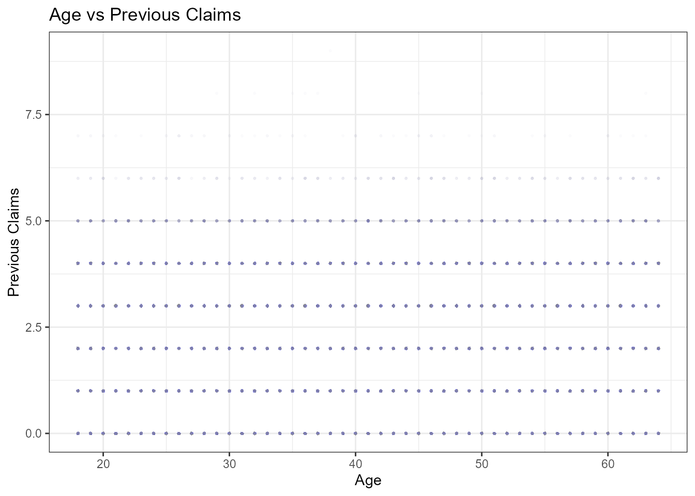
Se observan líneas horizontales bien marcadas en 0, 1 y 2, mientras que a medida que aumenta el número de reclamos previos (3, 4, 5, 6, 7, 8, 9), los puntos se vuelven cada vez más tenues, lo cual coincide con la baja frecuencia de esos valores dentro de la variable. Este patrón se repite de forma similar en todas las edades, por lo que no se aprecia ninguna relación entre la edad del cliente y su cantidad de reclamos previos.
Vehicle Age vs Age
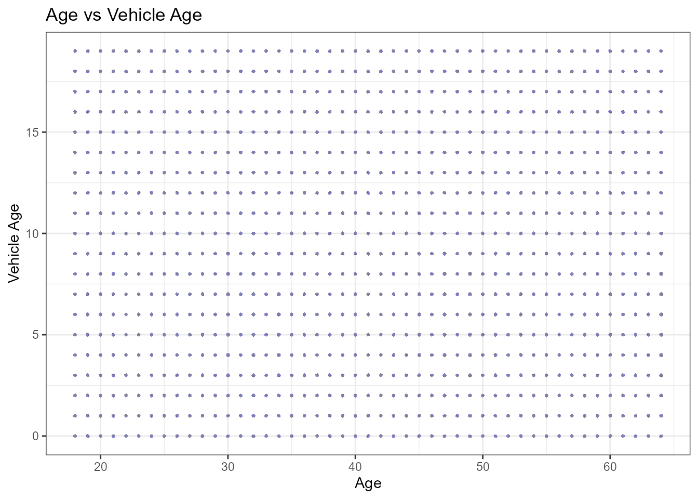
Se forma una especie de cuadrícula bastante uniforme, ya que ambas variables toman valores discretos (edades y años de antigüedad del vehículo). Los puntos se distribuyen de manera pareja en todas las combinaciones posibles, sin ninguna concentración particular ni tendencia visible, lo que indica que no existe relación entre la edad del cliente y la antigüedad de su vehículo.
Age vs Credit Score:
Para todas las edades, los valores de Credit Score se distribuyen de manera uniforme a lo largo de todo el rango, desde 300 hasta 849, sin ninguna concentración particular en alguna zona específica. No se aprecia una relación entre la edad del cliente y su puntaje crediticio, ya que las líneas se ven prácticamente idénticas para cada edad.
Age vs Insurance Duration:
Se forma una cuadrícula bastante uniforme entre ambas variables, ya que la Insurance Duration toma valores discretos del 1 al 9. Los puntos se distribuyen de forma pareja en todas las combinaciones posibles de edad y duración, sin ninguna concentración particular, lo que indica que no existe relación entre la edad del cliente y la duración de su póliza.
Age vs Number of Dependents:
Se forma nuevamente una cuadrícula uniforme, ya que Number of Dependents solo toma cinco valores posibles (0 a 4). Los puntos se distribuyen de manera pareja en todas las combinaciones de edad y cantidad de dependientes, sin ninguna concentración destacada, lo que confirma que no existe relación entre la edad del cliente y su número de dependientes.
Annual Income vs Health Score
Se aprecia una línea horizontal bastante marcada alrededor de 25, con densidad notablemente mayor que el resto, lo cual coincide con los valores imputados con la mediana en Health Score. Se nota además mayor concentración de datos en la zona de ingresos bajos, entre 0 y 50,000, lo cual coincide con la distribución sesgada de Annual Income vista anteriormente. Fuera de esos dos detalles, los puntos se distribuyen de forma pareja a lo largo de todo el rango de Health Score sin importar el nivel de ingreso, por lo que no se observa una relación clara entre ambas variables.
Annual Income vs Previous Claims
Se observan líneas horizontales bien marcadas en 0, 1, 2 y 3 reclamos, con mayor densidad en la zona de ingresos bajos, coincidiendo con la concentración natural de Annual Income. A medida que aumenta el número de reclamos previos (4 en adelante), las líneas se ven cada vez más tenues, lo cual es coherente con la baja frecuencia de esos valores. En general, este patrón se mantiene similar sin importar el nivel de ingreso, por lo que no se aprecia una relación entre Annual Income y Previous Claims.
Annual Income vs Vehicle Age
Se forma una cuadrícula bastante uniforme entre ambas variables, con líneas horizontales bien definidas en cada valor de Vehicle Age. Los puntos se distribuyen de forma pareja a lo largo de todo el rango de ingresos, con mayor densidad en la zona baja, lo que coincide con el coeficiente prácticamente nulo de la matriz de correlación (\(\rho_s \approx 0\)) e indica que no existe relación entre ambas variables.
Annual Income vs Credit Score
Se observa una línea horizontal bien marcada alrededor de \(595\), correspondiente a los valores imputados con la mediana en Credit Score, y una mayor concentración de puntos en la zona de ingresos bajos, entre \(0\) y \(50{,}000\), en línea con la distribución sesgada de Annual Income. Aunque visualmente los datos parecen distribuirse de forma uniforme, la matriz de correlación muestra que este es el par con la asociación más alta entre las variables numéricas (\(\rho_s = -0.133\)), lo que indica una relación negativa débil: a mayor ingreso anual, el puntaje crediticio tiende ligeramente a disminuir.
Annual Income vs Insurance Duration
Se forman nueve líneas horizontales bien definidas, correspondientes a cada valor de Insurance Duration (de 1 a 9). Los puntos se distribuyen de manera pareja a lo largo de todo el rango de ingresos, con mayor densidad en la zona baja donde se concentra la mayoría de Annual Income, pero sin ninguna tendencia particular que relacione ambas variables.
Annual Income vs Number of Dependents
Se forman cinco líneas horizontales bien definidas, correspondientes a cada valor de Number of Dependents (0 a 4), con una densidad mayor en el valor 2, donde se concentraron los valores imputados con la mediana. Los puntos se reparten de forma pareja a lo largo de todo el rango de ingresos, sin que exista una tendencia que vincule el número de dependientes con el nivel de ingreso anual del cliente.
Health Score vs Previous Claims
Se observan líneas horizontales bien marcadas en 0, 1, 2 y 3 reclamos, distribuidas de manera pareja a lo largo de todo el rango de Health Score. A partir de 4 reclamos en adelante, las líneas se vuelven cada vez más tenues, coincidiendo con la menor frecuencia de esos valores. En general, el comportamiento se mantiene similar sin importar el puntaje de salud del cliente, por lo que no se identifica relación entre ambas variables.
Health Score vs Vehicle Age
Se forman veinte líneas horizontales bien definidas, correspondientes a cada valor de Vehicle Age (de 0 a 19). Los puntos se distribuyen de manera pareja a lo largo de todo el rango de Health Score, sin ninguna concentración particular, lo que indica que no existe relación entre el puntaje de salud del cliente y la antigüedad de su vehículo.
Health Score vs Credit Score
Se observan dos líneas bien marcadas: una horizontal alrededor de 595 en Credit Score y otra vertical cerca de 25 en Health Score, ambas correspondientes a los valores imputados con la mediana de cada variable. Fuera de esas dos intersecciones, los puntos se distribuyen de manera uniforme a lo largo de todo el gráfico, sin ninguna tendencia particular que relacione ambas variables.
Health Score vs Insurance Duration
Se forman nueve líneas horizontales bien definidas, correspondientes a cada valor de Insurance Duration (de 1 a 9). Los puntos se distribuyen de manera pareja a lo largo de todo el rango de Health Score, sin ninguna concentración particular, lo que indica que no existe relación entre el puntaje de salud del cliente y la duración de su póliza.
Health Score vs Number of Dependents
Se forman cinco líneas horizontales bien definidas, correspondientes a cada valor de Number of Dependents (0 a 4). Los puntos se distribuyen de manera pareja a lo largo de todo el rango de Health Score, sin ninguna concentración destacada, lo que confirma que no existe relación entre el puntaje de salud del cliente y su número de dependientes.
Previous Claims vs Vehicle Age
Se forma una cuadrícula donde las columnas más marcadas corresponden a 0, 1, 2 y 3 reclamos previos, mientras que a partir de 4 en adelante los puntos se vuelven cada vez más tenues, coincidiendo con la baja frecuencia de esos valores. Dentro de cada columna, los puntos se reparten de forma pareja en todo el rango de Vehicle Age, por lo que no se observa relación entre ambas variables.
Previous Claims vs Credit Score
Se forman columnas verticales bien definidas en 0, 1, 2, 3 y 4 reclamos previos, que se van desvaneciendo progresivamente a partir de 5, coincidiendo con la menor frecuencia de esos valores. Dentro de cada columna, los puntos se reparten a lo largo de todo el rango de Credit Score, sin una concentración particular, por lo que no se identifica relación entre ambas variables.
Previous Claims vs Insurance Duration
Se forma una cuadrícula donde las columnas correspondientes a 0, 1, 2 y 3 reclamos previos se ven más marcadas, mientras que a partir de 4 en adelante se van desvaneciendo, en línea con la menor frecuencia de esos valores. Dentro de cada combinación, la duración de la póliza se distribuye de forma pareja entre 1 y 9 años, sin evidenciar una relación entre ambas variables.
Previous Claims vs Number of Dependents
Se forma una cuadrícula donde las columnas de 0, 1, 2 y 3 reclamos previos se ven más definidas, mientras que a partir de 4 en adelante se van desvaneciendo, coincidiendo con la menor frecuencia de esos valores. Dentro de cada columna, el número de dependientes se distribuye de forma pareja entre 0 y 4, sin evidenciar una relación entre ambas variables.
Vehicle Age vs Credit Score
Se forman veinte líneas verticales bien definidas, correspondientes a cada valor de Vehicle Age (de 0 a 19). Los puntos se distribuyen de manera uniforme a lo largo de todo el rango de Credit Score, desde 300 hasta 849, sin ninguna concentración particular, lo que indica que no existe relación entre la antigüedad del vehículo y el puntaje crediticio del cliente.
Vehicle Age vs Insurance Duration
Se forma una cuadrícula bastante uniforme entre ambas variables, ya que las dos toman valores discretos. Los puntos se distribuyen de forma pareja en todas las combinaciones posibles de antigüedad del vehículo y duración de la póliza, sin ninguna concentración particular, lo que indica que no existe relación entre ambas variables.
Vehicle Age vs Number of Dependents
Se forma una cuadrícula bastante uniforme entre ambas variables, ya que Number of Dependents solo toma cinco valores posibles (0 a 4). Los puntos se distribuyen de manera pareja en todas las combinaciones de antigüedad del vehículo y cantidad de dependientes, sin ninguna concentración destacada, lo que confirma que no existe relación entre ambas variables.
Credit Score vs Insurance Duration
Se forman nueve líneas horizontales bien definidas, correspondientes a cada valor de Insurance Duration (de 1 a 9). Los puntos se distribuyen de manera uniforme a lo largo de todo el rango de Credit Score, sin ninguna concentración particular, lo que indica que no existe relación entre el puntaje crediticio del cliente y la duración de su póliza.
Credit Score vs Number of Dependents:
Se forman cinco líneas horizontales bien definidas, correspondientes a cada valor de Number of Dependents (0 a 4). Los puntos se distribuyen de manera uniforme a lo largo de todo el rango de Credit Score, sin ninguna concentración destacada, lo que confirma que no existe relación entre el puntaje crediticio del cliente y su número de dependientes.
Insurance Duration vs Number of Dependents:
Se forma una cuadrícula uniforme entre ambas variables, ya que las dos toman pocos valores discretos. Los puntos se distribuyen de manera pareja en todas las combinaciones posibles de duración de la póliza y número de dependientes, sin ninguna concentración destacada, lo que confirma que no existe relación entre ambas variables.
Tras analizar la relación entre todas las combinaciones posibles de variables numéricas independientes, se observa un patrón bastante consistente a lo largo de todo el análisis: en la mayoría de los casos no se identifica una relación clara entre las variables, ya que los datos se distribuyen de manera uniforme sin mostrar tendencias, agrupaciones o patrones particulares. Las únicas irregularidades visibles corresponden a las variables que fueron imputadas con la mediana (Health Score y Credit Score), donde se aprecia una línea de mayor densidad en el valor imputado, así como en Previous Claims, donde la menor frecuencia de reclamos altos se refleja en una disminución progresiva de la densidad de puntos. En conjunto, estos resultados respaldan lo observado previamente en la matriz de correlación, confirmando que las variables numéricas del dataset no presentan relaciones monótonas fuertes entre sí. La única excepción es el par Annual Income y Credit Score (\(\rho_s = -0.133\)), cuya relación negativa débil no se distingue a simple vista en el gráfico de dispersión.
df <- dplyr::rename(
df,
Premium_Amount = `Premium Amount`,
Smoking_Status = `Smoking Status`,
Policy_Type = `Policy Type`,
Health_Score = `Health Score`,
Exercise_Frequency = `Exercise Frequency`,
Annual_Income = `Annual Income`,
Vehicle_Age = `Vehicle Age`,
Marital_Status = `Marital Status`,
Education_Level = `Education Level`,
Customer_Feedback = `Customer Feedback`,
Previous_Claims = `Previous Claims`,
Credit_Score = `Credit Score`,
Number_of_Dependents = `Number of Dependents`,
Property_Type = `Property Type`,
Insurance_Duration = `Insurance Duration`
)